Native Rectangular Linear Assignment with Implicit Rejection:
A Jonker–Volgenant Solver without Square Expansion
Abstract
Tracking and matching applications often solve rectangular assignment with a uniform unmatched penalty. Padded Python LAPJV interfaces embed the N M costs in an (N+M)-square matrix: for 256 rows and 4096 columns, 144.5 MiB of costs for an 8 MiB problem. We engineer and evaluate Rust (JVRUST), hybrid Rust/C++ (JVHYBRID), and C++ (JVCPP) implementations combining established rectangular JV principles, implicit rejection, float64 working arithmetic, and reusable batch workspaces. Four Windows/Linux and Python environments evaluate LAPX 0.13.0 and laprust/lapcpp 1.2.0, each with 204 cases and 8,946 timing samples. JVRUST and JVCPP beat ordinary SciPy in all 71 required non-batch cases per environment. Against capped SciPy, they win 119–123 and 121–124 of 125 finite-limit cases, respectively; remaining losses reach about 1.16 times capped SciPy’s median latency. Four-worker JVRUST reduces sequential-loop latency by 1.82–5.43 times; for 1024 tiny problems, one-worker batching gives 1.89–2.37 times. All 3,925 compared numerical objectives agree exactly across environments. On two cached video clips, assignment-replay speedups of 1.86–3.26 times translate into smaller Centroid-update gains of 1.04–1.15 times and near-equal SORT medians, without establishing detector-plus-tracker acceleration or a general tracking-accuracy benefit. A separate 67-case LSAPE study distinguishes formulation, specialization, layout, and rejection tracking within Hungarian code. The contribution is software integration and performance evaluation, without algorithmic priority or causal attribution to individual components. Initialization policy selection used development workload families; evaluation is not held out from heuristic development.
Keywords: linear assignment; Jonker–Volgenant; rectangular matching; implicit rejection; rejection penalties; research software; Rust; C++; Python
1 Introduction
Every frame, a multi-object tracker must decide which of its tracks continues which new detection. This is a linear assignment problem with two complications that the textbook formulation leaves out: the two sets differ in size, and a pair whose cost exceeds a gating threshold should not be matched at all. An unmatched track may be occluded; an unmatched detection may be a new object. ByteTrack [1] and trackers built on its association code express this with a single call to a Jonker–Volgenant solver from the lap package [2], passing the threshold as a cost limit. The solver then embeds the N M costs in an (N+M)-square matrix whose dummy rows and columns price each rejection. The same pattern arises wherever correspondences may be missing, in data association, resource allocation, and correspondence estimation. The cost limit prices rejection; it does not require maximizing the number of pairs below the threshold.
The expansion is costly. Consider 256 rows and 4096 columns stored in float64. The original matrix occupies 8 MiB. Zero-padding to 4096 square requires a 128 MiB cost matrix. Modeling unmatched penalties with a 4352 square matrix requires 144.5 MiB. These figures describe the cost matrices alone, before outputs and solver workspace, and the search must also traverse the dummy entries. A native rectangular method can instead operate on the real costs and maintain state proportional to the two set sizes.
Avoiding these transformations is not new in principle. Rectangular assignment, outsourcing, and assignment with insertion and deletion costs already admit compact formulations and specialized augmenting-path algorithms [3, 4, 5, 6, 7, 8, 9], and tracking toolboxes accept non-assignment costs directly [10, 11]. Volgenant’s rectangular JV with row-reduction initialization (1996) [9] and its structure-aware use for outsourcing by Bijsterbosch and Volgenant (2010) [8] are direct predecessors. Our contribution is software integration and performance evaluation: bounded row reductions, uniform rejection within augmenting search, and reusable batch workspaces, exposed through Python interfaces with the threshold objective of lap.lapjv. SciPy’s modified rectangular JV already avoids required-assignment padding [4, 12]; we therefore compare expanded and compact formulations, including exact capped costs on the original dimensions. These comparisons retain measured practical advantages and counterexamples without claiming algorithmic priority or assigning the residual native-versus-SciPy gap to individual components.
This paper describes such a solver. It combines a Jonker–Volgenant square strategy, derived from the scalar src-d/lapjv approach [13], with native rectangular matching and an implicit rejection terminal that represents a uniform unmatched penalty without dummy rows or columns. The solver is implemented three times with identical semantics: entirely in Rust (JVRUST), in Rust with a C++ square-completion kernel (JVHYBRID), and entirely in C++ (JVCPP). JVRUST is distributed as the laprust package [14] and as the lapjvr family of LAPX [15]; JVHYBRID is LAPX’s lapjvh family; JVCPP is the lapcpp package [16]. All three expose the same single-matrix and batch interfaces.
The paper makes four contributions.
-
•
Derivation. A self-contained derivation of the uniform-penalty objective in one-sided form and a sufficient primal-dual optimality certificate for the exact-arithmetic formulation, related to established optional-assignment formulations (Section 3).
-
•
Software integration. Rectangular Jonker–Volgenant implementations with explicitly bounded row reductions, a uniform rejection terminal stored as one distance and one predecessor row, compatible Python threshold arguments, and reusable batch workspaces. The integration builds on established initialized rectangular and outsourcing methods (Section 4).
- •
-
•
Empirical characterization. Rust, hybrid Rust/C++, and C++ implementations measured in four Windows/Linux and Python environments, covering batching, repeated memory trials, large and extreme shapes, structured costs, rejection sweeps, and remaining SciPy counterexamples. Appendix B gives the current Linux results and four-environment comparison. A separate controlled LSAPE study distinguishes formulation, specialization, layout, and rejection-slack tracking effects within Hungarian code (Sections 5.10 and 6.11), without ranking JV against LSAPE. An application study measures real tracking and common-matrix replay on supplied MOT clips (Section 6.12 and Appendix C).
Section 2 positions the solver among existing methods and interfaces. Section 3 formulates the problem and proves the reformulations, and Section 4 describes the revised implementation. Sections 5 and 6 present the current Windows experimental design and results, Section 7 discusses their implications, and Section 8 lists limitations. Appendix A gives the refreshed second Windows environment. Appendix B gives the current Linux replications and their comparison with the Windows results. Appendix C gives the application protocol, absolute timings, workload sizes, and supplied-box accuracy results.
2 Background and related work
2.1 Assignment algorithms and implementation lineage
Jonker and Volgenant’s algorithm combines initialization, reductions, and a specialized shortest augmenting path procedure [3]. Initial stages often construct much of the matching cheaply. Remaining free rows require augmenting paths that can reassign existing pairs. A square matrix therefore does not eliminate the augmentation phase; it only removes the need for a dimensional transformation.
We use completion to mean the augmenting-path phase that finishes a partial matching. It does not refer to padding the cost matrix.
The baselines are established Jonker–Volgenant families, evaluated through their LAPX implementations [15]. JVX (lapjv, lapjvx, lapjvxa) uses the gatagat/lap-derived dense core [2]; this study times lapjvxa, which returns assignment pairs. JVS (lapjvs, lapjvsa) uses the src-d/lapjv-derived implementation [13]. JVC (lapjvc) adapts the classic dense shortest-path implementation in py-lapsolver [17]. These implementations have different initialization and numeric details. Their shared use of augmenting paths does not imply identical kernels.
SciPy’s native rectangular solver is documented as a modified Jonker–Volgenant algorithm without initialization, referencing Crouse’s treatment [4, 12]. Rectangular solving without square padding already exists independently of the proposed solver. Initialized rectangular JV also predates this work: Volgenant’s RJV omits square column reduction and applies augmenting row reduction from zero column potentials [9]. Bijsterbosch and Volgenant refine RJV and specialize it for k-cardinality and outsourcing, including a capped-cost comparison on the original dimensions and a single relevant external option per person [8]. That unexpanded outsourcing formulation originates with Vander Wiel and Sahinidis, whose shortest augmenting path algorithm treats external assignment through a single unrestricted arc [18]. These initialized rectangular and outsourcing searches are direct predecessors of the state and rejection handling studied here. The contribution concerns software integration and performance evaluation, without priority for these individual principles.
2.2 Optional assignment and compact representations
Optional assignment also has clear precedents. Bougleux and Brun formulate linear sum assignment with edition using a null element on each side rather than a full square expansion [5]. Their augmenting paths can terminate at a null element, representing removal or insertion. The associated LSAPE toolbox supplies C++ implementations, including null-terminal path routines [19]. The 2016 publication is the conceptual comparison; the July-2017 LSAPE-v4 release is the implementation used in our separate controlled experiment. Equality with the author-hosted v4 archive was checked on 27 October 2026, but does not establish identity with the code behind the 2016 timings.
Jones, Chawdhary, and King adapt Volgenant–Jonker methods to graph-edit matching [6]. Their compact representation avoids explicitly storing the redundant zero and infinite regions of the expanded matrix, using only (n+1)(m+1)-1 entries. Bougleux and colleagues subsequently describe a compact reduction from assignment with error correction to a rectangular assignment problem without cost constraints of the earlier reductions [7].
Bougleux and Brun [5] address assignment with element-specific insertion and removal costs through a compact null-element representation and an adapted Hungarian algorithm. The present solver specializes the penalty structure: a common cost per unmatched endpoint yields a one-sided objective with rejection cost per unmatched smaller-side row, up to an additive constant (Section 3.3). We realize this specialization within a Jonker–Volgenant implementation combining rectangular reductions, rejection state stored as one distance and one predecessor row, the threshold arguments of lap.lapjv, and native batching. Null-terminal augmenting paths already occur in [5]; we do not claim a new optional-assignment objective, a new null-terminal principle, or an asymptotic improvement over that approach. Table 2 compares the documented designs. Section 6.11 measures the one-sided adaptation within LSAPE-v4; it does not compare our JV implementation against LSAPE or reproduce the 2016 experiments. The native JV code descends from the JVS lineage; no algorithmic priority is claimed.
Application interfaces also accept non-assignment costs. MATLAB’s assignjv, assignmunkres, and assignauction take a scalar cost of non-assignment charged per unmatched endpoint [11]. The Tracker Component Library includes a Jonker–Volgenant routine for missed detections that never builds the augmented matrix but keeps search state for one virtual row per target [10]. The implementation combines a constant-size rejection terminal with rectangular reductions, the threshold arguments of lap.lapjv, and native batch execution.
The compact reduction in [7] is also an executable comparison point. For uniform endpoint penalties, its cost factorization reduces, up to a constant shift, to capping real costs at the combined rejection price. Section 3.5 gives a self-contained argument for this specialization, including finite signed costs, and Section 6.5 evaluates it with SciPy. This provides a baseline without square expansion; it does not reproduce every optimization in the authors’ LSAPE software.
2.3 Public interfaces and transformed problems
Table 1 summarizes how the evaluated dense solvers handle rectangular inputs and unmatched penalties. With no finite limit, an N M required problem assigns every element on the smaller side, assuming feasibility. A finite cost limit changes the objective and may reduce the number of pairs.
| Solver | Required rectangular input | Finite unmatched penalty |
|---|---|---|
| JVX | Zero-padding to max(N,M) square | Internal (N+M) square augmentation |
| JVS | Wrapper zero-padding to max(N,M) square | No public limit parameter |
| JVC | Wrapper zero-padding to max(N,M) square | No public limit parameter |
| Proposed solver (three implementations) | Native rectangular solving | Implicit rejection terminal |
| SciPy | Native rectangular solving | No equivalent public limit parameter |
The sparse LAPMOD interface of LAPX is outside the performance study because it accepts a different representation and requires square sparse problems.
| Aspect | Bougleux and Brun (2016) | Present JV implementation |
|---|---|---|
| Penalty model | Element-specific insertion and removal costs | Uniform per unmatched endpoint; equivalent row price |
| Cost representation | edit-cost matrix with a null element per side | Real costs and a scalar rejection price |
| Path endpoints | Real or null elements in an edit-assignment model | Free real column or implicit rejection terminal, stored as a best distance and predecessor row |
| Search | Hungarian-style primal-dual algorithm | JV reductions, bounded reduction passes, and shortest augmenting paths |
| Integration and evaluation | Single-instance algorithms and comparison with square-expanded assignment | Python interfaces, reusable batch workspaces, and complete-call compact/expanded comparisons |
3 Problem formulation
3.1 Required rectangular assignment
Let C be an N M real cost matrix, with forbidden edges excluded from the admissible edge set E. Orient the matrix so that r = min(N,M) and c = max(N,M), with r c. In (1) and (4), for . A required rectangular assignment solves
| (1) |
The solver must match all r rows if this is feasible. Surplus columns remain unused. If the original matrix is tall, the returned indices are mapped back to the original orientation.
3.2 Finite-limit assignment
Let L be a finite limit and A a matching with K pairs. The finite-limit objective is
| (2) |
Each unmatched vertex incurs L/2. In the square augmentation used by JVX, the real costs occupy the upper-left block. Real-to-dummy and dummy-to-real blocks cost L/2, while the dummy-to-dummy block is zero.
Equation (2) is not equivalent to solving a required assignment and then discarding expensive pairs. For example, let
Two real pairs cost 1.8. Selecting only the zero-cost pair leaves two unmatched vertices and costs 1.0 under (2). Both nonzero finite edges are below the threshold, yet the smaller matching is preferable.
At equality, a real edge of cost L can tie with rejecting both endpoints. The objective does not impose maximum cardinality among equal-cost optima. Applications that require a particular inclusive-threshold or cardinality rule must specify it separately.
3.3 One-sided rejection equivalence
Proposition 1. In exact arithmetic, minimizing (2) is equivalent to minimizing
| (3) |
on the oriented real rectangular problem.
Proof. Rearranging the rejection term gives
The final term is independent of A. Consequently, F and P have the same minimizers. The argument holds for any finite real L, including zero and negative values, and includes empty dimensions.
The transformation is useful because every smaller-side row can either select a real column or take a rejection option costing L. No separate dummy column is needed for each possible rejection. The constant must be restored when comparing the full penalized objective, but it does not affect the optimizer.
Signed support is an interface convenience rather than a new uniform-penalty model: adding a constant to all admissible real costs and to shifts by the constant in exact arithmetic. Floating-point execution still requires the numeric contract below.
The public returned total is different again: it sums only selected original input costs and excludes rejection penalties. Our validation and benchmark checks reconstruct the penalized objective rather than confusing it with this reported total.
3.4 Primal-dual certificate
For an effective row penalty p, introduce a rejection variable :
| (4) | ||||
| subject to |
This is a network-flow formulation: each row contributes one unit, real columns have unit capacity, and a row may send its unit directly to the terminal at cost p. The integral capacities yield integral optimal solutions. Its dual is
| (5) |
Proposition 2. A feasible matching/rejection solution is optimal if a feasible dual satisfies tightness on matched real edges, for rejected rows, and for unused columns.
Proof. The primal-dual gap can be written as
| (6) |
Every term is nonnegative by primal and dual feasibility. The stated conditions make each term zero, so the primal and dual objectives coincide. Weak duality establishes optimality.
For required rectangular assignment, rejection variables and the constraints are omitted. The non-positive column potentials and zero potentials on unused columns remain important. Ordinary square reductions cannot be transferred blindly to a rectangular implementation.
These propositions establish the formulation and a final optimality certificate. They are not a formal verification of every implementation transition or a floating-point error bound.
3.5 Compact equivalent formulations
The one-sided objective also permits two formulations for an ordinary required rectangular solver. First, append r dummy columns of cost L to the oriented real matrix. The resulting r (c+r) problem assigns every row either to a real column or to one of the distinct dummy columns. Removing dummy pairs recovers an optimal finite-limit matching under (3).
Second, no additional columns are necessary when rejection costs are uniform. Define a capped matrix on the original r c dimensions:
| (7) |
Proposition 3. Let B be a minimum-cost required matching of all r rows under (7). Retain only its pairs whose original cost is strictly below L. The retained matching minimizes (3); rejecting equality ties is one valid optimality convention.
Proof. For any required matching B, let A be its retained subset. Every discarded pair costs L in the capped problem, so the capped cost of B is exactly P(A). Conversely, any finite-limit matching A can be extended to r pairs because cr. Each of the added pairs costs at most L after capping, and each original pair costs at most its original cost. Thus some required matching has capped cost at most P(A). Taking minima in both directions proves equality of the optimal values and optimality of the retained subset. The argument holds for finite real L and finite admissible costs, including negative values; forbidden original pairs are discarded.
This is the uniform-penalty case of the substitution factorization underlying [7], stated here to make the comparison reproducible. Under this specialization, Bougleux et al. (Theorem 1, Eqs. (7)–(9)) retain selected substitutions at equality, whereas Proposition 3 and the capped SciPy adapter discard them. Both conventions preserve the optimal penalized objective in exact arithmetic, but may return different pairs and cardinalities. Capping occurs before optimization. It is therefore different from solving the original required problem and then discarding expensive pairs, which fails in the example in Section 3.2. The capped and dummy-column baselines are equivalent in exact arithmetic; their floating-point behavior is assessed separately by the validation experiments.
Figure 1 summarizes the equivalent finite-limit representations and the work included in a complete call.
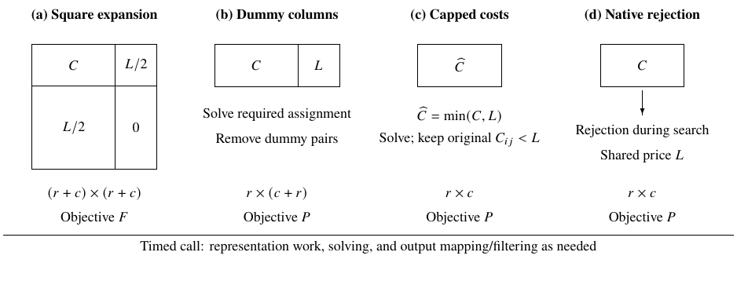
4 Implementation
4.1 Shared architecture and three implementations
Each implementation consists of a thin Python extension and a native core. The extension validates shape, real numeric type, precision, and limit options, prepares a contiguous working representation where necessary, and invokes the core. The single-matrix and batch interfaces, return contracts, and error behavior are identical across the three implementations. Table 3 lists them.
| Label | Main core | Square completion | Distribution |
|---|---|---|---|
| JVRUST | Rust | Rust | laprust 1.2.0 [14]; LAPX 0.13.0 lapjvr [15] |
| JVHYBRID | Rust | C++ | LAPX 0.13.0 lapjvh [15] |
| JVCPP | C++ | C++ | lapcpp 1.2.0 [16] |
Interface compatibility here means that the single-matrix entry points accept the extend_cost, cost_limit, and return_cost arguments of lap.lapjv with the same objective: the finite limit prices unmatched endpoints, and the reported total excludes those penalties. They return matched row and column index arrays, or pairs, rather than lap’s full-length per-row and per-column assignment vectors, so callers of lap need a small output adaptation. Compatibility does not imply identical assignments when optima tie, or identical behavior across precision modes. At , matching and rejection tie in exact arithmetic. Native reductions and search prefer rejection on computed ties, whereas the evaluated padded lap.lapjv can retain the edge. This is not a strict output guarantee: the rounded effective penalty in Section 4.5 can differ from the supplied .
The native dispatcher selects the square kernel only for square inputs with an infinite limit. The square kernel’s initialization and reductions are followed by an augmentation phase that completes the matching. JVRUST executes this phase in Rust. JVHYBRID calls a C++ completion kernel that operates on Rust-owned workspace and preserves the completion strategy and operation order. JVCPP implements the whole algorithm in C++, including the same C++ completion routine. This design permits two comparisons: of completion kernels within otherwise identical Rust code (JVRUST against JVHYBRID), and of complete Rust and C++ implementations of one algorithm (JVRUST against JVCPP).
All rectangular inputs and finite-limit inputs, including square matrices with a finite limit, use the rectangular core. JVRUST and JVHYBRID share that Rust core, so differences between them on these paths cannot be interpreted as evidence of different rectangular algorithms. JVCPP executes the same rectangular algorithm in C++.
4.2 Native rectangular reductions and search
The rectangular core stores separate mappings, potentials, predecessors, distances, and free-row lists. Following Volgenant’s RJV initialization [9] and its later refinements [8], it omits square column reduction and starts column potentials at zero. Its bounded augmenting row reductions lower a column potential only while assigning that column, maintaining non-positive potentials and zero potentials on unused columns.
After reductions, each remaining free root is introduced with a feasible row potential obtained from its available reduced costs and, in finite-limit mode, the rejection penalty. The root’s reduced costs are retained as the initial shortest-path distances, so the first relaxation does not read the cost row again. A shortest-path search then scans real columns. Reaching a free column completes an augmenting path. Reaching an occupied column continues through its assigned row, allowing previous pairs to be rearranged.
The revised releases use two bounded rectangular row-reduction passes with . Each pass permits at most B times its initial free-row count in row scans, including displacement retries. Among equally cheap real columns, a free column is preferred [8]; in finite-limit mode the implicit rejection option still wins its computed ties. For required rectangular matching, consecutive displacements without acquiring a free column disable further price lowering. Acquiring a free column resets the streak until the cutoff is reached; once disabled, the cutoff persists across both passes. The current scan completes normally. Finite-limit inputs, including optional squares, use the same scan allowance and tie preference without that stall cutoff. Remaining free rows enter augmenting search. These rules limit initialization work without removing admissible edges or changing the objective. Required square problems retain their separate square initializer, which samples four complete rows to select an existing initialization strategy.
The common scan allowance replaces the preceding release’s shape-specific reduction limits. Policy selection used development workload families, including congested and tied costs, and is not a held-out validation of an optimal heuristic. The required-only cutoff limits unproductive displacement chains while allowing optional chains to continue within the scan allowance. Free-column tie scans can add work on heavily tied costs. The complete-call experiments do not isolate the causal contributions of the allowance, tie preference, and cutoff.
4.3 Implicit rejection terminal
For finite-limit matching, the search compares real-column paths with a rejection terminal. A real edge has reduced cost . Leaving a row unmatched has reduced cost . The implementation stores the best terminal distance and its predecessor row using the variables dummy_distance and dummy_row.
More precisely, let be the shortest-path distance at which row i is reached; the root has . When row i is reached, the rejection candidate updates the terminal distance , the smallest such value so far, and its row. Each unsettled real column j is relaxed to . If is no greater than the smallest unsettled column distance, rejection is selected; otherwise that column is settled, and the search either ends at a free column or continues through the column’s matched row. The terminal therefore adds one distance and one predecessor row to the ordinary search state.
Let D be the distance of the selected endpoint. The root’s potential increases by D. Every settled column j has its potential lowered by and, if matched, its row’s potential raised by the same amount. Assignments are then reversed from the free column, or from the terminal’s predecessor row, back to the root. A free column ending the path has and keeps its zero potential, so column potentials stay non-positive and unused columns stay at zero.
If rejection is selected, the number of real pairs need not increase: the path can replace one row’s real assignment and leave another row unmatched.
Figure 2 illustrates how either search endpoint changes the real matching.
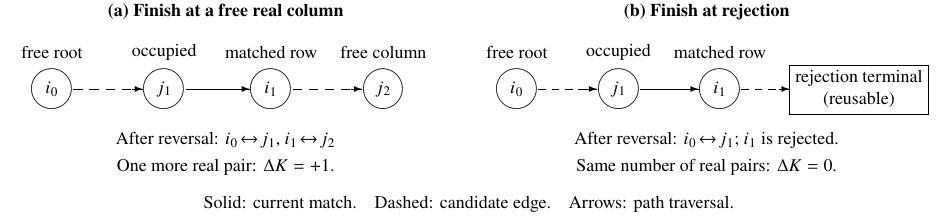
Algorithm 1 summarizes the distinction between this representation and explicit matrix augmentation.
4.4 Storage, batching, and operation bounds
For contiguous wide inputs in the selected cost dtype, the real cost matrix can be borrowed. Solver state is , with float64 numerical workspace even when costs are float32; widening this linear workspace does not require a dense float64 cost copy. Pair output is . Tall inputs may require an orientation copy, and dtype or layout conversion can also require a dense copy. Including these costs, storage remains , rather than requiring a c-square or (r+c)-square cost matrix.
Batch input storage is shared with the call. Each active worker retains its own workspace and can reuse it across problems; results are collected in input order, and the lowest failing index is reported on error. JVRUST and JVHYBRID schedule problems on reusable Rayon thread pools. JVCPP uses a reusable C++ thread pool and claims consecutive small problems in chunks, bounded to about 4096 costs per claim so that adjacent difficult problems are not serialized on one worker. Wide inputs require no per-worker padded cost matrix; tall problems can require orientation buffers. This distinction is relevant to peak memory as worker counts increase.
Each bounded row-reduction pass performs scans of at most c real costs; the additional free-column tie scan has the same order. Since , the two passes cost . Each final augmenting search visits at most r occupied real columns before reaching a terminal, scanning up to c candidates at each step. Across r roots, augmentation costs . Thus is a conservative bound for this release’s rectangular solve, excluding separately described conversion and output work. The required-only cutoff can reduce initialization work but is unnecessary for this bound. This is an implementation bound, not an asymptotic improvement over established rectangular assignment methods.
4.5 Numeric and interface contract
All three native implementations retain selected float32/float64 cost storage while using float64 potentials, distances, minima, and reduced-cost arithmetic on required square, rectangular, and finite-limit paths. This extends the earlier square-path arithmetic to rectangular and finite-limit solving. LAPX’s JVS implementation also widens its numerical working state. The correction reduces cancellation when large costs coexist with small assignment differences; it cannot restore distinctions lost during input conversion or guarantee exact optimization for arbitrary dynamic ranges. Finite float64-to-float32 conversion overflow is checked. Other accepted real numeric dtypes first undergo NumPy conversion to float64 without an equivalent explicit overflow check; on platforms with wider real types, a finite value outside binary64 range can become positive infinity at that stage. A motivating upstream report [20] gives the exactly representable float32 matrix : choosing the diagonal costs , while the off-diagonal costs . Accumulating selected original costs in float64 exposes the difference that float32 arithmetic can conceal. This witness motivates regression coverage without establishing robustness for every numerical scale.
For a finite limit, the boundary rounds the half-limit in the selected cost dtype T before promoting it for working arithmetic: , . The effective row penalty p need not equal the supplied L. The theoretical equivalence therefore applies to the represented costs and effective penalty. The controlled performance study uses float64 inputs; the application study retains float32 tracker costs and separately widens the same values for replay (Appendix C). The small enumeration study uses binary-rational costs and exactly representable limits, while targeted regressions additionally exercise cancellation, rounded penalties, conversion, and original-input totals. Native output does not apply a raw post-filter, so computed-tie preference does not guarantee rejection whenever the raw cost equals the supplied limit. Public totals sum selected original input costs and exclude rejection penalties.
Positive infinity represents a forbidden edge. NaN and negative infinity in the matrix are outside the documented supported contract. Required matching can be infeasible, and reduced-cost overflow can also cause an error; these conditions should not be conflated. As defensive checks, a path reversal that does not reach its root and a final matching whose row and column mappings disagree are reported as internal errors rather than returned.
All methods in the controlled assignment timing suites return int64 pair arrays and omit total-cost calculation. Pair ordering remains native to each interface. Untimed validation checks feasibility and objective values, rather than demanding identical arrays when optimal assignments tie.
5 Experimental design
5.1 Software and environment
The controlled experiments evaluate LAPX 0.13.0, lapcpp 1.2.0, and laprust 1.2.0 in four Windows/Linux and Python environments. Python 3.14.10 uses NumPy 2.5.4 and SciPy 1.18.1; Python 3.11.18 uses NumPy 2.4.6 and SciPy 1.17.1 on both operating systems. Measurement records identify package versions and seven loaded native modules by SHA-256. All campaigns ran on 29 October 2026, sequentially within each operating system with Python 3.11.18 before Python 3.14.10. Main tables and runtime figures report Windows Python 3.14.10 unless stated otherwise; Appendix A gives Windows Python 3.11.18, and Appendix B gives both Linux runs and the four-environment comparison. Each environment retains its own observations and timing estimates.
Both refreshed Windows environments used the Intel Core i9-13900KS host, with 16 physical cores and 24 logical processors, on Windows build 26300. The supplied run bundle records source-repository commits, wheel/setup evidence, loaded native-module hashes, and interpreter identities. The Windows campaign’s preservation checks cover the stock interpreters and source repositories. These records improve traceability but do not independently establish every compiler flag or isolate compiler effects.
On Windows, single-matrix timings use logical CPU 0 and batch timings logical CPUs 0–3, with one or four requested native workers. The recorded Windows processor topology maps CPUs 0–1 to one physical core and 2–3 to a second: the four-worker experiment uses four logical processors on two physical cores. Visible BLAS/OpenMP pools are limited to one thread. CPU frequency, turbo behavior, and external activity are not fixed. Appendix B records Linux’s different logical-CPU selection and the limits of its available hardware metadata.
The four controlled suites ran sequentially within each interpreter environment. Recorded input digests and shuffled method schedules agree across all four environments and reproduce the frozen generators. Per-logical-CPU utilization samples accompany the runs. NumPy, SciPy, ABI-specific native binaries, interpreter builds, operating systems, batch placement, and sessions differ across relevant comparisons. These observations do not isolate interpreter, compiler, or operating-system effects.
5.2 Equivalent objectives and output work
The seven timed solvers in the controlled assignment suites are JVRUST, JVHYBRID, JVCPP, JVX, JVS, JVC, and SciPy. All receive contiguous float64 input. The three implementations of the proposed solver explicitly select float64; JVS disables its default float32 preference.
For required assignment, each public interface receives the real matrix. Its normal rectangular handling is included in timing. For finite limits, JVRUST, JVHYBRID, JVCPP, and JVX use their public limit support. JVS, JVC, and SciPy receive an explicitly augmented (N+M) square matrix, which is constructed inside the timed call. Dummy output pairs are filtered back to the real matrix. Required outputs are normalized to int64 pairs inside timing, and all available total-cost calculations are disabled.
This comparison answers a practical question: what does each configured interface cost when solving the same problem and returning a similar usable result? It is not a measurement of native kernels in isolation. Its finite-limit SciPy configuration uses square expansion. Section 5.6 additionally evaluates two compact formulations, so the square comparison is not treated as the best achievable finite-limit baseline.
5.3 Workloads and timing
Twelve single-matrix cases include uniform square and rectangular inputs, both orientations, a moderately rectangular case, a congested block case, tied costs, and finite positive, tight, negative, and square limits. Each case uses four independently generated matrices. Uniform costs lie in [0,1); the signed case uses [-1,1). Forbidden entries occur with probability 0.5 in the main finite-limit cases and 0.2 in the signed case.
The congested 256 320 case makes three quarters of the rows favor one quarter of the columns. Costs outside that preferred block, and in the opposite block for the remaining rows, receive an increment of 3. The tied case quantizes uniform costs to eighths. These cases test structure beyond independent continuous costs.
Data generation and all reference checks occur outside timing. Each method is warmed on every matrix. A calibration chooses the number of four-matrix cycles for a target 30 ms timing block, with at least one cycle. Nine rounds use a seeded shuffled method order. Garbage collection is disabled only within timed blocks. Results are medians across round averages; interquartile ranges describe timing-round variability rather than the distribution of individual problem instances.
Three batch cases use 64 problems of size 64 80 without a finite limit, 16 problems of size 128 160 with limit 0.5 and 50% forbidden entries, and 1024 problems of size 8 10 without a finite limit. The last case represents many small independent assignments available together. Native JVRUST, JVHYBRID, JVCPP, and JVX batch calls are compared at one and four workers, along with sequential JVRUST and SciPy loops. Batch times include output-list construction and cover the entire batch.
5.4 Correctness validation
An independent memoized enumeration computes optimal objectives for dimensions 0–5 by 0–6, both float32 and float64, ten generated matrices per shape, and five limit settings: infinity, -1, 0, 1, and 2. Costs are integers from -16 through 16 divided by 8, with 20% forbidden entries. Each of the 4,200 problem settings is solved by JVRUST through both laprust and LAPX, by JVHYBRID, and by JVCPP, giving 16,800 calls.
The checks verify pair dimensions, dtype, index bounds, uniqueness, finite selected edges, required cardinality where applicable, and the full penalized objective. Infeasible required problems are identified by enumeration and must produce an error. Binary-rational inputs permit exact objective comparison for this bounded study.
The Windows preflight additionally runs targeted package regressions for working precision and the revised reduction policy. Every timed single instance and batch output is checked against an independently formed SciPy reference before measurement in all four environments. The Linux reruns execute the benchmark’s enumeration and edge checks; full package test suites and native Rust/C++ build tests are not represented as having been rerun there.
5.5 Memory measurement
Memory measurements use one fresh process for each method and condition. After imports and a small warmup solve, a contiguous 256 4096 float64 input is created and touched by generation. Windows process counters record the working set and its high-water mark immediately before and after the solve.
The reported additional peak is the increase in the process high-water mark above the input-prepared baseline. It is not an allocation count or total process memory. The base measurements use one trial per condition and are descriptive. Section 5.8 adds five fresh-process trials per condition across a size and orientation sweep, alongside exact transformed-matrix size calculations.
5.6 Implicit rejection against compact formulations
A separate experiment runs JVRUST and JVCPP together with SciPy using (a) the square expansion, (b) r dummy columns, and (c) capped costs as defined in Section 3.5. JVHYBRID shares JVRUST’s rectangular and rejection code and is not repeated. All five methods run in the same randomized timing rounds. Conversion, construction of the transformed costs, solving, removal of dummy or capped pairs, orientation mapping where necessary, and int64 pair construction are included. The binaries, CPU affinity, four instances, nine rounds, and 30 ms target blocks are those of the main study; the samples are archived separately, and ratios within this experiment use its own measurements.
The first five workloads reproduce the main study’s finite-limit inputs by consuming the same random stream in full. Five additional workloads cover 128 160 inputs at limits 0.005 and 0.001 with 50% forbidden costs, a tall 160 128 case at 0.005 with 50% forbidden costs, a wide 64 512 case at 0.005 with 50% forbidden costs, and the congested 256 320 block construction at limit 0.5 without forbidden entries. The additional generator uses seed 20261122. These cases were chosen to exercise rejection and structured competition; they are not a held-out random sample of applications.
Before timing, all five methods are compared with independent enumeration on 2,100 float64 problems: dimensions 0–5 by 0–6, ten binary-rational matrices per shape, 20% forbidden entries, and limits -1, 0, 0.125, 1, and 2. This gives 10,500 solver calls, separately from the main validation. Four targeted cases add 20 calls covering all-forbidden costs, equality ties, the Section 3.2 counterexample, and negative costs. Every timed output is checked for feasibility and penalized-objective agreement with the square-expanded reference.
5.7 Matrix-size scaling
A further experiment measures runtime over a predeclared size grid. The presentation follows the dimension sweeps in Figures 4 and 5 of Linear Sum Assignment with Edition [5]: both dimensions grow together, or one remains fixed, and the same measurements appear on linear and logarithmic axes. This is a new experiment with the uniform-penalty objective, not a reproduction of that paper’s general edit-cost benchmark.
Three shape families use independent uniform [0,1) costs without forbidden entries: square with , 32, 64, 128, 256, 512, and 1024; wide with through 512 in powers of two; and fixed with through 4096 in powers of two. Each family is measured for required assignment and for finite-limit assignment at . A fourth family applies the congested block construction from Section 5.3 with , through 1024 in powers of two, and . This gives 47 shape/objective settings. The uniform finite-limit sweeps exercise the rejection path but need not produce substantial rejection; the congested sweep separately exercises persistent competition and rejection. It is not claimed to be a worst-case construction.
Required curves compare all seven solvers. Finite-limit curves compare JVRUST, JVCPP, JVX, and the three equivalent SciPy formulations from Section 3.5; JVHYBRID shares JVRUST’s finite-limit code. Input and adapter work, int64 outputs, CPU affinity, warmup, four instances, nine shuffled timing rounds, and the 30 ms target block follow the main protocol. At large sizes a single four-matrix cycle can exceed 30 ms; every method still receives nine rounds. Data generation and objective checks are excluded from timing. The input generator uses seed 20261222, and the method-order generator uses 20261223. Each setting receives fresh matrices; a larger input does not contain the smaller input as a submatrix.
The horizontal coordinate is the sum of the original dimensions, not the number of matrix entries or the expanded problem order. Curves connect measured medians; bands and error bars show timing-round interquartile ranges. Both axes are logarithmic in the right panels. No extrapolation or fitted complexity exponent is used. Identical values from different shape families need not represent equal input storage or equivalent problems.
5.8 Larger inputs, special cases, and repeated memory measurements
An additional predeclared grid contains 132 timing cases, 528 method/case settings, and 4,752 timing samples per environment. Large squares have orders 1000, 2000, 3000, and 5000. Large rectangles have shapes 1000 2000, 2000 3000, and 4000 5000, together with their exact transposes. Extreme rectangles pair 64 rows with 4096, 8192, or 16384 columns, again in both orientations. Costs are uniform [0,1); finite-limit large and extreme cases use . This size-dependent limit is distinct from the fixed base scaling experiment.
Structured sweeps use 256 320 and 512 640 inputs. Congestion varies the fraction of rows competing for the first quarter of columns over 0.25, 0.5, 0.625, 0.75, and 0.9, with an off-block increment of 3. Forbidden-entry probabilities are 0, 0.5, 0.9, and 0.99; a finite diagonal is planted to guarantee required feasibility. Tied costs use 1, 2, 8, or 256 quantization levels. Their finite limits are 0.5 for congestion, for forbidden entries, and 0.25 for ties. Signed costs use uniform [-1,1), 50% nominal forbidden entries and a finite feasible diagonal on 256 320 and its transpose, with for finite-limit assignment.
Rejection sweeps use 128 160 and 256 320 inputs, either uniform with 50% forbidden entries or congested without forbidden entries. Eleven limits, 0, 0.0005, 0.001, 0.002, 0.005, 0.01, 0.02, 0.05, 0.1, 0.5, and 4, reuse the same costs within a family. Changing the limit changes the objective, so this experiment does not isolate a causal effect of the rejected fraction. The seed is 20261024, with stable family and instance keys. Runtime transposes use identical costs in transposed orientation. Each case retains four inputs, nine shuffled rounds, and the 30 ms calibration target. Every timed output is validated outside timing, and hashes are checked again to detect input mutation.
The focused required comparison uses JVRUST, JVHYBRID, JVCPP, and native rectangular SciPy; the finite-limit comparison uses JVRUST, JVCPP, capped SciPy, and dummy-column SciPy. JVX, JVS, and JVC are excluded from this extension to keep the larger experiments tractable; the base all-solver comparisons remain in Figures 3–8. Thus a winner in a focused plot means a winner among those selected methods. The declared resource limits are 240 seconds per method/case, 1200 seconds per complete case, and 120 seconds per memory trial. No method was excluded and no measurement failed in either completed extension.
Repeated memory trials use 256 M for , 512, 1024, 2048, and 4096, plus the nonsquare transposes. Required methods are JVRUST, JVCPP, SciPy, and JVX; finite-limit methods are JVRUST, JVCPP, capped, dummy-column, and square-expanded SciPy at . There are 81 conditions and five fresh processes per condition, totaling 405 trials per environment. A small warmup precedes input creation; validation occurs after peak capture. Each shape/trial is paired across methods, while memory orientations use independently generated, distribution-matched arrays to avoid a pre-baseline transpose allocation. Medians and interquartile ranges include process and input variation and are not allocation counts.
Finally, 23 edge fixtures generate 129 solver checks, including 15 expected infeasibility checks. They cover empty dimensions, one row or column, all-forbidden and all-zero costs, costs equal to the rejection limit, signed costs, an isolated infeasible row, and neighboring floating-point values around the limit. The small fixtures use independent exhaustive objectives; tied pair identities need not agree.
5.9 Cross-environment comparison
Each current environment contributes 994 method/case settings across 204 cases: 12 single-call, three batch, ten formulation, 47 scaling, and 132 extended cases. All 8,946 timing samples per environment are retained. Independent saved-data audits recalculate medians and quartiles, check input identities and schedules, recompute repeated-memory summaries, and compare numerical objectives and recorded cardinalities. The four campaigns contain 35,784 timing samples and 1,660 memory observations in total.
Ratios in the manuscript divide within-run median times; they do not average ratios from different sessions. Timing rounds are not paired across environments. Some supplementary focused charts summarize within-round paired ratios and are explicitly labeled that way. Interquartile ranges describe the recorded timing rounds or memory trials, not population confidence intervals. The workload grid is designed rather than sampled from applications; no population significance tests or universal interpreter-speed claim are made.
For each of JVRUST and JVCPP, the 201 non-batch comparisons per environment divide into 71 required cases against ordinary SciPy (seven initial, 20 scaling, 44 extended), 125 finite-limit cases against capped SciPy (ten formulation, 27 scaling, 88 extended), and five additional initial finite-limit cases against expanded SciPy. Thus the compact-denominator subset contains 196 comparisons. A raw method label of scipy in the saved initial suite does not make its finite-limit adapter ordinary required assignment. Capped SciPy is not universally the fastest evaluated compact formulation: dummy-column SciPy can be faster on extreme tall inputs. We keep these denominator classes separate when interpreting wins.
5.10 Controlled specialization within LSAPE
A separate completed experiment uses the July-2017 LSAPE-v4 Hungarian implementation [19]. The unchanged upstream function uses its released initialization defaults. It is not established to be the exact code behind Bougleux and Brun’s 2016 report [5]. All 29 extracted upstream files match the saved archive, and the 72,355-byte author-hosted archive retrieved on 27 October 2026 has the same SHA-256 identity. The adaptation retains Hungarian tree growth, FIFO traversal, dual updates, and path reversal. It introduces no JV reductions, JV search, mathematical orientation, or batching. This is a comparison within LSAPE, not a JV-versus-LSAPE benchmark.
Use for the original row and column dimensions in this experiment, without imposing . With and , original LSAPE uses endpoint prices , while one-sided LSAPE uses . For real pairs, and differ by the constant . Every arm is compared using the restored objective. Original and one-sided solutions may have different pair identities or cardinalities under ties. Table 9 defines all five arms, including unchanged one-sided LSAPE as a baseline in its own right. The padded specialization P is the principal control because U and P read the same fully materialized one-sided buffer and stride, separating specialization from layout. The principal control therefore retains the materialized edit matrix. All compact arms and their regressions remain reported.
The ratios separate four changes. changes only the endpoint-cost formulation in unchanged upstream code and layout. measures combined specialization on the same fully materialized buffer and leading dimension: it skips known-zero column minima, specializes the one-sided search, and adds rejection tracking, while also changing reference dimensions to by-value parameters and using size_t cost indexing. Individual preprocessing and code-generation effects are not isolated. compares ordered rejection scans with guarded tracking at the same compact layout. compares padded and compact tracked representations, including border construction and strided access. The primary includes both formulation and specialization. Compact storage saves only doubles, and every arm still copies real costs; no process-memory benefit is measured.
All arms share one freshly built MSVC 19.44.35229 binary, common argument validation, column-major conversion, mapping checks, and int64 pair outputs. The build uses /O2 and /fp:precise without fast-math or contraction options. The bridge converts every arm to float64 and instantiates the Hungarian kernels with double costs, potentials, and slacks; it has no JV row-reduction retry stage. Consequently, the JV precision and initialization changes of Section 4 require no mechanical port to this experiment. The LSAPE patch and upstream sources remain unchanged for this rerun. Costs and limits must be finite, nonnegative binary64 values bounded by , with . Round-to-nearest and gradual underflow are required. Signed costs, forbidden edges, required assignment, batching, and application traces remain outside this narrower contract. The guard is not a universal floating-point proof. Cached rejection slack is recomputed from the selected potential, using its fast path only for ; otherwise the ordered scan retains rounded-tie behavior.
Fresh strict validation passed 10,190 input cases: 190 small/edge cases with 5,661 enumerated partial-matching states and 10,000 stress cases through dimensions 64. It checked 50,950 full primal-dual certificates, 122,280 exact final mapping/potential array comparisons after signed-zero normalization, and 50,950 ordinary/diagnostic API identity checks. Capped and square-expanded SciPy objectives were checked on every input, and 50 invalid-input calls were rejected. Non-dyadic limits, neighborhoods of and , negative zero, and subnormal fixtures were included. When relative tolerance underflows to zero, equality is required exactly. The maximum recorded certificate residual was . Ten additional bridge calls apply the precision witness of Section 4.5 to all five arms with float32 and float64 inputs at ; every arm returns the enumerated off-diagonal optimum. These checks concern final states, not every intermediate transition or all binary64 inputs.
For each specialized arm, 44 validation cases return at the empty-input bridge, 861 finish without search, and 9,285 enter search. Each tracked arm records 136,089 searches: 44,666 free-column endings, 2,943 rejections on row entry, and 88,480 rejections at dual updates. Both tracking branches execute, with 145,163 fast paths and 292,175 fallbacks. These untimed verification counts establish sampled coverage, not proportions in the timing workload. Unavailable upstream internal counters remain unknown.
The frozen 67-case grid contains eight uniform square cases, sixteen uniform cases, eight congested cases, sixteen uniform cases, twelve extreme rectangles, and seven threshold-tie cases. Squares and shapes use smaller dimensions 128–1024; shapes use 64–512; extreme cases use 64 against 1024, 4096, and 16384. Every nonsquare case has an exact transpose partner. Fixed and size-dependent use separate inputs and objectives. Threshold ties use , , and for uniform . Congestion uses the three-quarter-row, one-quarter-column construction with off-block increment 3. Zero limit is validation-only; the optional additional limit sweep was not performed.
Three fresh processes ran sequentially on the same Windows host between 14:25 and 14:38 UTC on 29 October 2026, using Python 3.11.18, NumPy 2.4.6, and SciPy 1.17.1. Each case/process has four inputs shared by all five methods, yielding 804 generated input views. The driver, harness, frozen 67-case manifest, twelve-row paper subset, and native binary are identical across sessions. Logical CPU 0 affinity and one visible library thread are applied; frequency and background activity are not fixed, and this workflow defers heavy publication work until all measurement sessions finish. These are same-day/window sessions, not independent-day, reboot, machine, or compiler replications. Nine seeded-shuffled rounds per case use a 30 ms calibration target over complete four-input cycles, yielding 9,045 timing-round averages. Complete-call timing includes validation, conversion, representation/workspace allocation, solving, mapping checks, and pair output; generation, reference solves, diagnostics, counters, warmup, and calibration are outside timing. Full certificates and one-sided final-state identity are also checked on every timing input.
Within each session, paired round time ratios have central estimate . Across sessions we report the median and observed minimum/maximum of the three estimates, never pooling the 27 rounds as independent observations. The declared practical ratio band is . Its classifications and session ranges are descriptive, not significance or equivalence claims. Saved exploratory 95% percentile bootstrap intervals use 10,000 paired-round resamples conditional on four fixed inputs and an IID-pairs assumption; serial correlation and thermal drift can invalidate nominal coverage. Table 10 brackets are session ranges, not those intervals. Separately summarized factor medians need not multiply exactly. Twelve rows were preselected before measurement, and all 67 cases remain in the saved exports with absolute times, both row-rejection and unmatched-smaller-side fractions, and diagnostic coverage.
6 Results
6.1 Correctness outcomes
In each environment, all four solver entry points agree exactly with enumeration on all 16,800 calls: JVRUST through laprust and through LAPX, JVHYBRID, and JVCPP. Eighty calls correspond to infeasible required problems and correctly produce errors. The maximum absolute objective discrepancy on feasible settings is zero. This result applies to the finite grid and shapes described above.
The Windows preflight passes targeted working-precision regressions: 132 LAPX cases and 75 cases for each standalone package, with eight reduction-policy checks per standalone package. These checks exercise cancellation, represented costs and penalties, original-input totals, and the distinction between required and optional initialization. The saved preflight logs and source snapshots identify the executed tests. They do not replace full release CI or prove arbitrary floating-point behavior. Appendix B reports the numerical validation actually recorded for the Linux campaigns.
All 336 single-instance benchmark checks and 11,040 batch-output checks pass in each environment. The extension adds 2,112 timed-input objective checks and 129 edge checks per environment, all passing. All 3,520 saved formulation, scaling, and extended timing objectives agree exactly across all four environments, with no recorded match-count differences. The 405 repeated-memory objectives also agree exactly, giving 3,925 compared objectives in total. Main individual and batch outputs retain validation flags rather than full per-output objective records, and memory records contain no pair counts. Pair-array equality is not required when optimal assignments tie.
6.2 Single-matrix runtime
Table 4 reports median microseconds per matrix. Figure 3 shows the same cases with timing-round interquartile ranges. JVS, JVC, and SciPy values in finite-limit rows include explicit augmentation.
| Case | JVRUST | JVHYBRID | JVCPP | JVX | JVS | JVC | SciPy |
|---|---|---|---|---|---|---|---|
| Square 128 128 | 64.53 | 65.11 | 67.32 | 110.14 | 105.89 | 259.11 | 258.74 |
| Square 512 512 | 1082.04 | 1093.92 | 1105.98 | 3253.88 | 3196.71 | 5975.50 | 4995.34 |
| Wide 64 512 | 13.96 | 13.95 | 13.86 | 864.44 | 806.18 | 1559.42 | 70.91 |
| Tall 512 64 | 26.42 | 26.72 | 78.71 | 876.85 | 822.44 | 1838.64 | 142.61 |
| Rectangle 256 320 | 81.89 | 81.47 | 78.98 | 170.67 | 170.00 | 4001.66 | 532.24 |
| Blocks 256 320 | 897.14 | 875.48 | 862.85 | 9460.27 | 9387.67 | 5568.75 | 1398.29 |
| Ties 128 160 | 12.86 | 12.62 | 13.74 | 58.95 | 59.09 | 91.98 | 74.89 |
| 128 160, | 13.57 | 13.53 | 20.30 | 539.36 | 425.81 | 2178.49 | 430.70 |
| 256 320, | 68.43 | 69.16 | 78.35 | 3663.88 | 3037.01 | 14399.55 | 2170.60 |
| Tight 128 160, | 9.54 | 9.62 | 14.84 | 439.15 | 371.67 | 2431.52 | 1080.17 |
| Signed 128 160, | 13.82 | 13.61 | 19.64 | 996.84 | 844.52 | 3071.36 | 409.48 |
| Square 128, | 79.94 | 75.48 | 82.11 | 189.87 | 180.86 | 590.33 | 496.15 |
A native implementation is fastest among the configured methods in all seven required cases and all five finite-limit cases. On the uniform 256 320 input, JVRUST takes 81.89 microseconds versus 532.24 for SciPy. Table 4 retains the congested, tied, signed, and finite-limit cases rather than selecting only favorable uniform inputs.
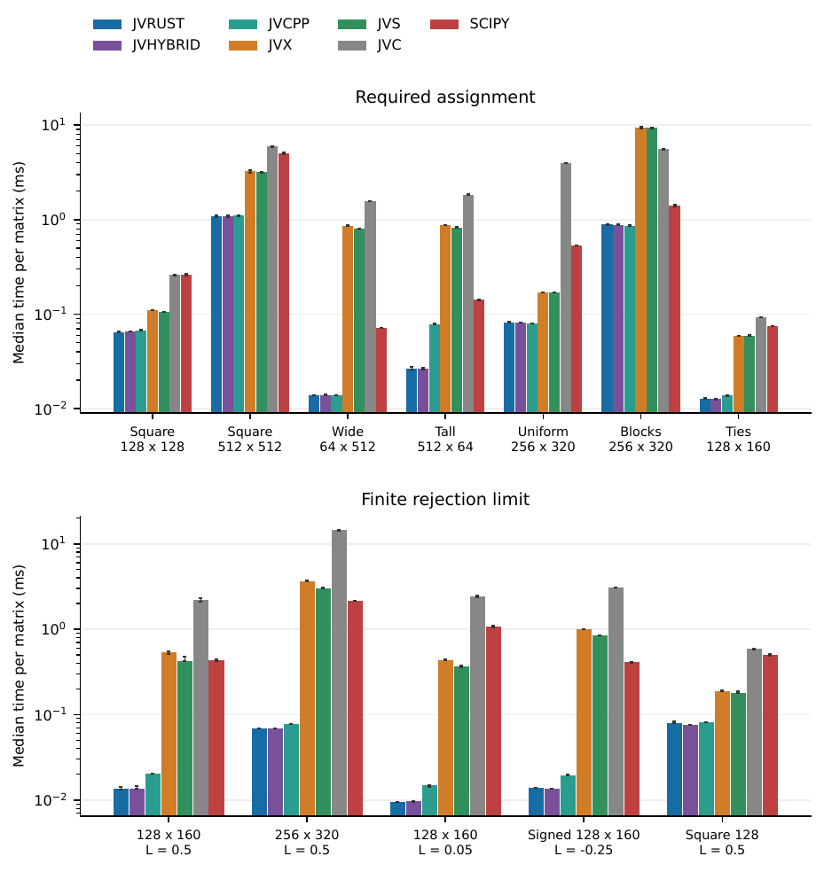
The required congested case favors the native implementations: JVRUST takes 0.897 ms, JVHYBRID 0.875 ms, and JVCPP 0.863 ms, versus 1.398 ms for SciPy. This concerns required assignment; the finite-limit compact comparison in Section 6.5 has a different ordering. On required tied costs, JVRUST takes 12.86 microseconds and JVS 59.09. These observations characterize the combined implementation; they do not isolate initialization, tie handling, reductions, or search.
Finite-limit JVRUST single-call medians range from 9.54 to 79.94 microseconds. The practical gap against square-augmented SciPy includes representation construction and output adaptation. Section 6.5 separately compares smaller and unexpanded finite-limit formulations.
Most finite-limit timing instances still have a complete smaller-side matching at the optimum. The tight case averages 119.75 pairs, leaving 8.25 of 128 smaller-side rows unmatched. These cases demonstrate that the observed speedups do not require a large unmatched fraction. They compare complete interface/formulation combinations and do not identify the principal cause of the performance gap. The added rejection and structure sweeps broaden the timed evidence (Section 6.8), while exhaustive validation remains restricted to small inputs.
JVRUST is faster than JVCPP in nine of twelve primary single-matrix cases and ten of twelve replication cases. JVHYBRID changes only required-square completion; its rectangular path is shared with JVRUST. Whole-call differences on that shared path cannot establish different rectangular algorithms. The paired-transpose extension broadens orientation evidence, while phase-level profiling would be needed to separate copying, search, and output costs.
6.3 Batch runtime
Table 5 compares whole-batch latencies. Four-worker native calls improve throughput within the restricted four-logical-processor affinity, but the amount depends on the workload.
| Method | 64 (64 80) required, ms | 16 (128 160) , ms | 1024 (8 10) required, ms |
|---|---|---|---|
| JVRUST sequential loop | 0.777 | 0.402 | 1.275 |
| JVRUST batch, 1 worker | 0.707 | 0.389 | 0.537 |
| JVRUST batch, 4 workers | 0.309 | 0.214 | 0.254 |
| JVHYBRID batch, 1 worker | 0.716 | 0.395 | 0.531 |
| JVHYBRID batch, 4 workers | 0.310 | 0.217 | 0.253 |
| JVCPP batch, 1 worker | 0.704 | 0.455 | 0.525 |
| JVCPP batch, 4 workers | 0.284 | 0.209 | 0.292 |
| JVX batch, 1 worker | 1.622 | 8.295 | 6.371 |
| JVX batch, 4 workers | 3.167 | 5.306 | 17.587 |
| SciPy sequential loop | 2.634 | 7.111 | 2.928 |
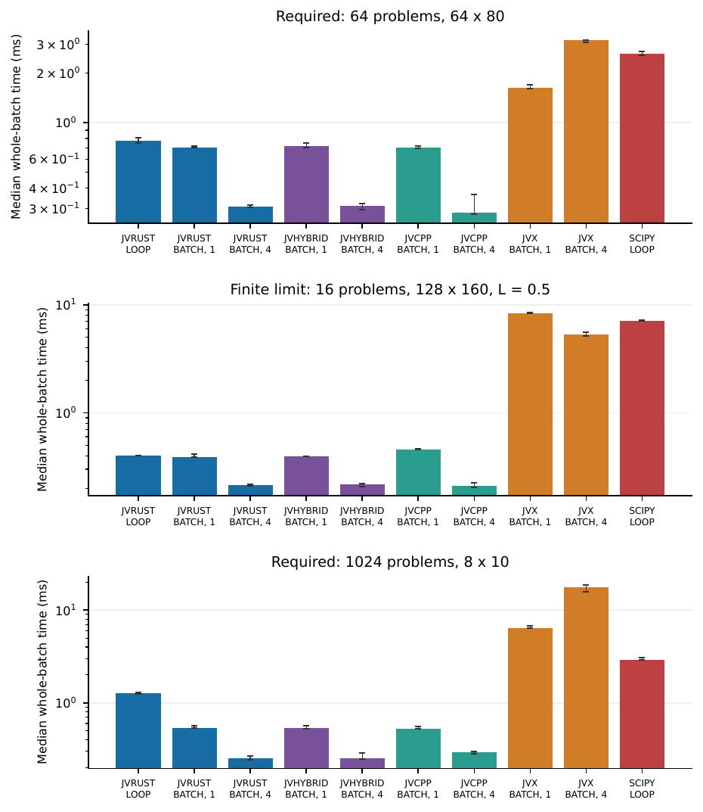
The primary Rust loop/batch ratios are 1.10 and 2.51 for the required 64-problem workload with one and four workers, 1.03 and 1.88 for the finite-limit workload, and 2.37 and 5.01 for 1024 tiny problems. Four-worker gains combine parallel execution with call, output, allocation, and workspace effects. The four logical processors span two physical cores; neither these ratios nor ratios above four against a Python loop establish superlinear parallel scaling.
More requested workers need not improve every backend or workload. Table 5 retains the JVX batch configurations and their variability as well as the proposed implementations. Close round medians should not be treated as stable implementation equivalence, and this experiment does not isolate scheduling, dispatch, and memory effects.
Across the two refreshed Windows environments, Rust loop/batch ratios with one worker range from 1.10–1.12 for 64 required problems, 1.01–1.03 for 16 finite-limit problems, and 2.22–2.37 for 1024 required problems. Corresponding four-worker ranges are 2.51–2.55, 1.82–1.88, and 4.74–5.01. These are ratios of within-environment median complete-call times, not confidence intervals. Serial batching does not isolate workspace reuse.
6.4 Peak working set
Table 6 reports additional peak working set above the input-prepared baseline. The common 8 MiB input is already resident. Figure 5 plots these increments.
| Method | Required, MiB | Finite , MiB |
|---|---|---|
| JVRUST | 0.094 | 0.145 |
| JVHYBRID | 0.148 | 0.129 |
| JVCPP | 0.168 | 0.125 |
| JVX | 128.156 | 144.672 |
| SciPy | 0.137 | 144.773 |
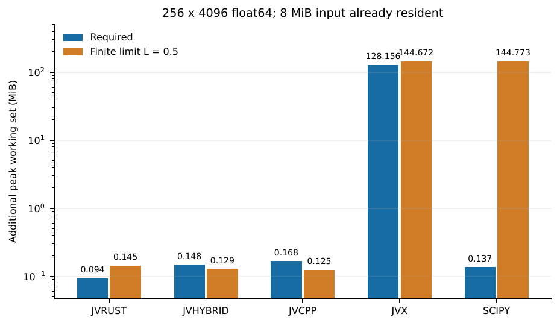
The native additional peak-working-set increments are 0.094–0.168 MiB in these primary wide-input conditions. The dominant padded and augmented increments remain consistent with the 128 MiB and 144.5 MiB cost-buffer calculations. Required SciPy also avoids a square cost buffer, so this representation benefit is shared with existing rectangular methods.
The small increments do not imply zero allocation. They are process-level measurements affected by prior high-water marks, allocator reuse, page residency, and the single-trial design. Their main interpretation is the absence of the much larger transformed dense cost buffer in this wide-input experiment.
6.5 Implicit rejection against compact formulations
The additional enumeration has zero objective error on all 10,500 grid calls, and the 20 targeted checks pass. All 200 timed-instance checks also pass. Table 7 reports the paired run. The mean unmatched count refers to smaller-side rows under JVRUST; equality ties may permit alternative optimal cardinalities.
| Case | Unmatched | JVRUST | JVCPP | Square | Dummy cols | Capped |
|---|---|---|---|---|---|---|
| 128 160, | 0.00 | 13.35 | 19.85 | 425.19 | 254.63 | 126.73 |
| 256 320, | 0.00 | 69.01 | 78.47 | 2163.34 | 1261.92 | 519.19 |
| 128 160, | 8.25 | 9.22 | 14.45 | 1048.94 | 239.09 | 102.19 |
| Signed 128 160, | 0.00 | 13.81 | 19.86 | 410.76 | 226.66 | 132.04 |
| Square 128, | 0.00 | 79.06 | 82.78 | 496.98 | 391.15 | 212.91 |
| 128 160, | 87.75 | 5.85 | 6.87 | 820.98 | 162.38 | 69.75 |
| 128 160, | 117.00 | 5.60 | 6.43 | 494.85 | 155.54 | 64.32 |
| Tall 160 128, | 89.50 | 13.43 | 14.90 | 880.41 | 173.21 | 79.20 |
| Wide 64 512, | 18.00 | 8.62 | 8.94 | 2028.66 | 191.14 | 83.62 |
| Blocks 256 320, | 112.00 | 781.88 | 725.27 | 2683.45 | 1639.23 | 717.37 |
For , , changing SciPy from square expansion (425.19 microseconds) to capped costs (126.73 microseconds) reduces complete-call latency by 3.36 times. JVRUST takes 13.35 microseconds, a further 9.49-fold gap, giving a square/Rust ratio of 31.84. The within-SciPy comparison changes formulation and adapter work; the remaining cross-implementation gap is not assigned to individual native components.
JVRUST is faster than capped SciPy in nine of ten formulation cases in both refreshed environments, by 2.69–11.93 times on its primary winning cases. Congested remains a counterexample for Rust: capped SciPy takes 0.717 ms, JVRUST 0.782 ms, and JVCPP 0.725 ms. In the replication, the corresponding medians are 0.742, 0.772, and 0.678 ms, so JVCPP wins that case there. The remaining comparisons, rejection fractions, and signed costs are retained in Table 7. Ratios are descriptive measurements of these interface/formulation combinations.
The alternatives also change the storage comparison. For a 256 4096 float64 problem, square expansion requires a 144.5 MiB transformed cost matrix, the r-dummy-column construction requires 8.5 MiB, and capped costs require 8 MiB. These are exact buffer-size calculations, not new process-memory measurements. For a suitable wide input, the proposed solver borrows the original costs and needs solver state; capped SciPy avoids the square expansion but our adapter creates an additional original-size cost array. The distinction is avoiding a transformed copy, as well as the number and organization of columns scanned.
6.6 Matrix-size and aspect-ratio scaling
Figures 6 and 7 show the uniform required and finite-limit sweeps, respectively. Figure 8 shows the congested finite-limit sweep with the same plotting convention. Every curve comes from the separate paired scaling run; ratios are calculated within that run. All 1,208 timed-instance feasibility and objective checks pass, and 2,718 timing-round samples are archived across 302 method/setting combinations.
At required , JVRUST takes 4.237 ms, JVHYBRID 4.256 ms, JVCPP 4.282 ms, and SciPy 23.055 ms. At required , JVRUST takes 0.079 ms and SciPy 0.515 ms, while JVX takes 66.716 ms. Increasing the larger dimension and increasing both dimensions therefore produce different practical workloads. The measurements do not isolate padding, initialization, and search as separate causes.
For finite-limit with , JVRUST takes 0.376 ms, capped SciPy 4.286 ms, and square-expanded SciPy 28.139 ms. All uniform finite-limit scaling instances have complete smaller-side matchings under JVRUST, so these curves measure finite-limit handling on easy-to-match random inputs rather than extensive rejection. Neither Rust nor C++ wins every scaling point.
The congested sweep uses the revised common scan allowance at every size. Rust loses to capped SciPy at and 256, but wins at and 1024 in both refreshed environments. At , primary medians are 12.835 ms for Rust, 11.884 ms for C++, and 17.929 ms for capped SciPy. C++ loses only the point in the primary run, by about 0.21%, and wins every sampled congested scaling point in the replication. The policy was selected using development families; these crossovers are not held-out evidence of an optimal initialization rule. Varying the limit or size also changes the search problem, preventing a causal interpretation based on rejection fraction alone.
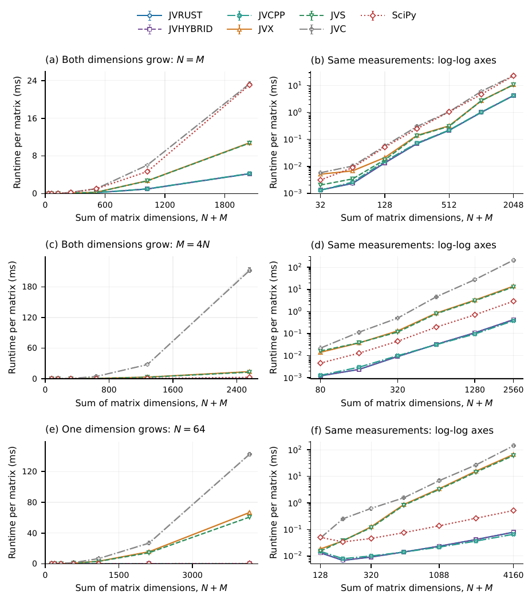
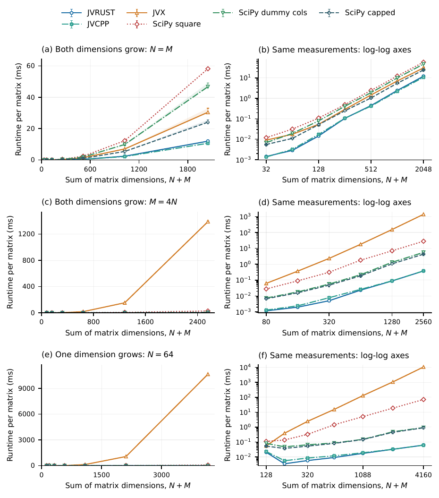
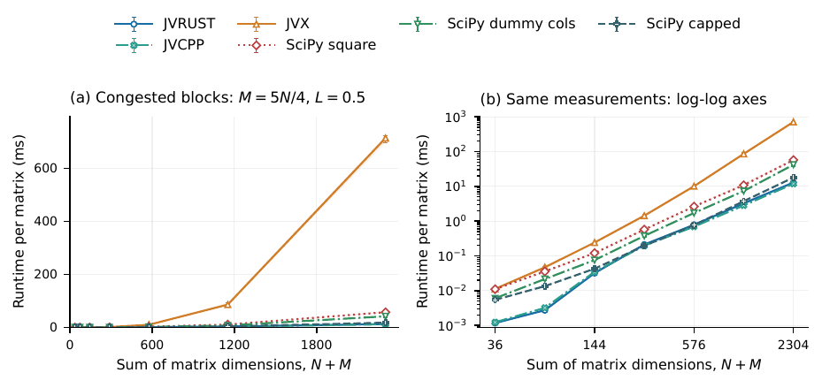
6.7 Larger matrices and extreme aspect ratios
The focused large-uniform comparisons favor the native implementations in both refreshed Windows environments. At required , JVRUST takes 257.82 ms in the primary run and 265.01 ms in the replication; SciPy takes 1085.20 and 1102.23 ms. At the size-dependent finite limit , Rust takes 11.41 and 11.66 ms, versus 140.12 and 135.26 ms for capped SciPy. Required and finite-limit instances optimize different problems, so their times do not isolate rejection overhead.
| Case | JVRUST 3.14 | Ref. 3.14 | JVRUST 3.11 | Ref. 3.11 |
|---|---|---|---|---|
| 5000 5000 R | 257.823 | 1085.199 | 265.013 | 1102.233 |
| 5000 5000 F | 11.415 | 140.119 | 11.664 | 135.264 |
| 4000 5000 R | 15.149 | 131.743 | 15.320 | 140.412 |
| 4000 5000 F | 8.475 | 101.631 | 8.740 | 98.641 |
| Signed 256 320 R | 0.087 | 0.789 | 0.097 | 0.901 |
| Signed 256 320 F | 0.067 | 0.487 | 0.064 | 0.498 |
| Signed 320 256 R | 0.120 | 0.890 | 0.121 | 0.938 |
| Signed 320 256 F | 0.105 | 0.604 | 0.096 | 0.600 |
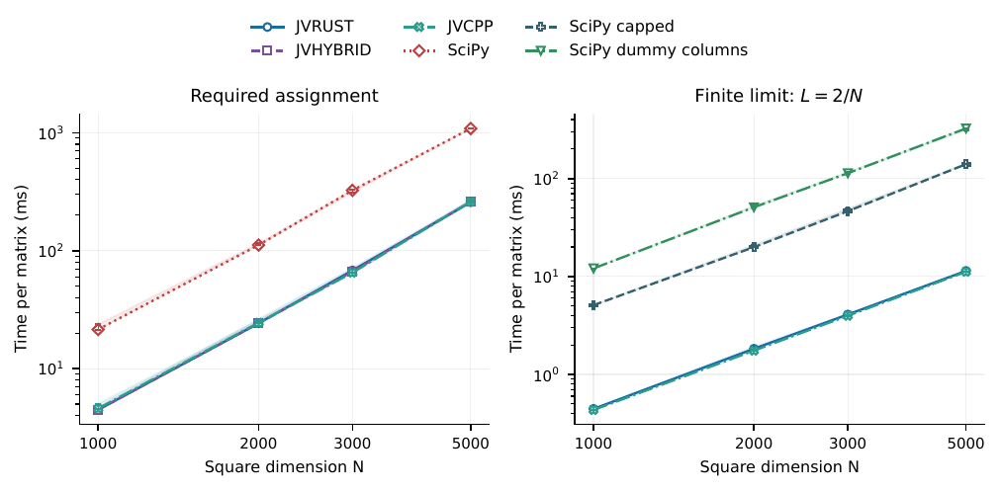
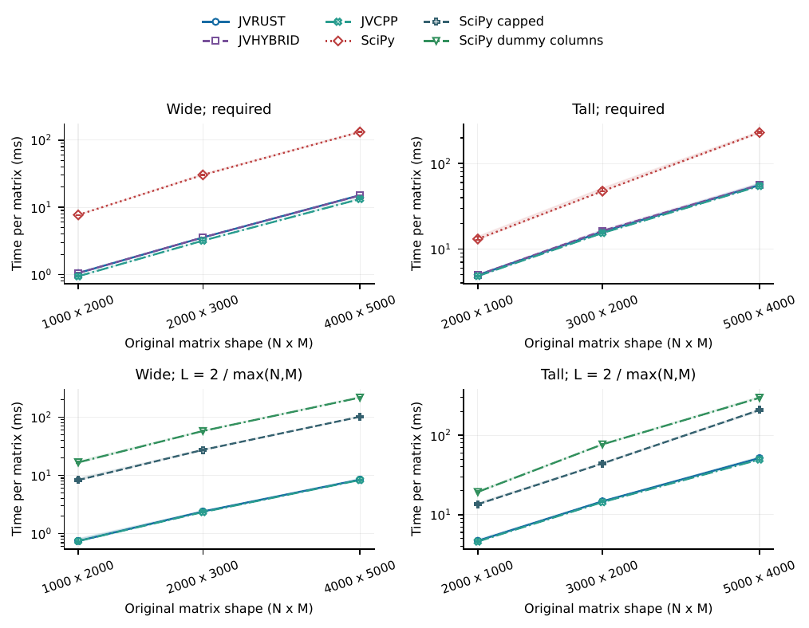
On the large square and rectangle grids, JVCPP/JVRUST median-time ratios range from 0.877–1.026 in the primary run and 0.890–1.017 in the replication. Neither implementation wins every point. These ranges describe the selected large inputs and build configurations, without isolating programming-language effects. The hybrid completion kernel has no uniform whole-call advantage.
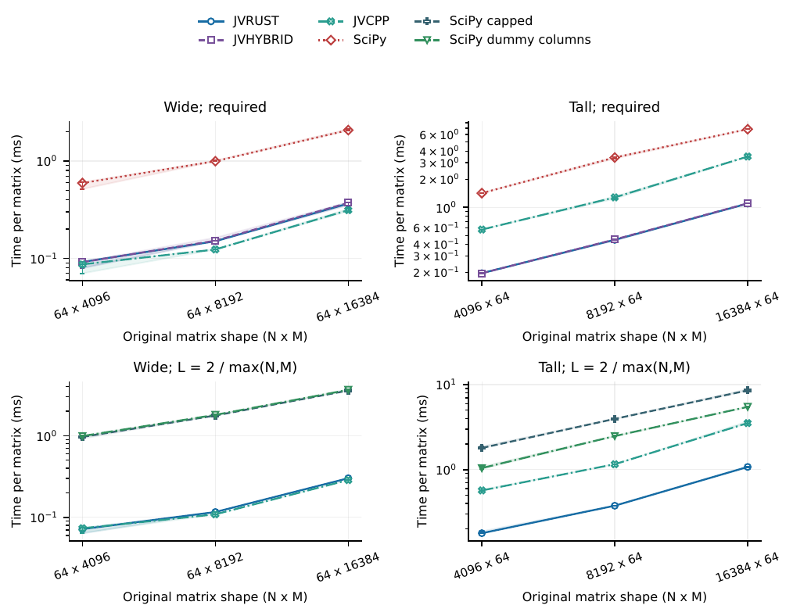
Extreme tall inputs retain larger implementation differences: JVCPP/JVRUST ratios range from 2.85–3.28 in the primary run and 2.86–3.76 in the replication. Paired transposes use identical represented costs; they establish orientation sensitivity but do not identify a single cause among conversion, search, and output work.
Dummy-column SciPy can outperform capped SciPy on extreme tall finite-limit inputs. Both compact alternatives and all orientations remain in the plots. This ordering is specific to the evaluated adapters; native rejection avoids constructing either transformed cost representation.
6.8 Structure, rejection, and edge cases
Both native methods beat ordinary SciPy in every required-congestion case in both refreshed environments. Optional congestion remains workload dependent. In the primary run, Rust loses at competing-row fractions 0.75 and 0.9 for , and C++ loses only at 0.9; neither loses on the tested optional-congestion grid. In the replication, Rust loses only the smaller shape at 0.9 and C++ has no optional-congestion loss. These discrete points do not determine a continuous crossover or isolate individual initialization rules.
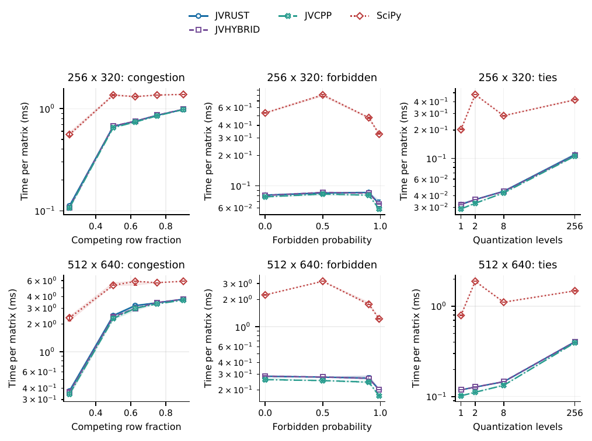
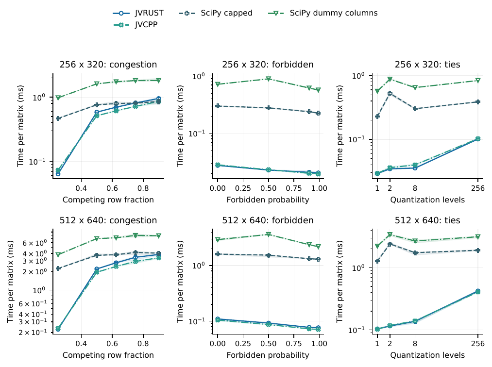
The native methods retain their advantage over the matching SciPy baseline throughout the tested forbidden-entry, tie, and signed grids in both Windows environments. This includes dense representations with 99% nominal forbidden entries and completely tied inputs; it does not compare sparse data structures or establish performance for arbitrary numerical ranges. Distinct selected pairs can still be optimal under ties.
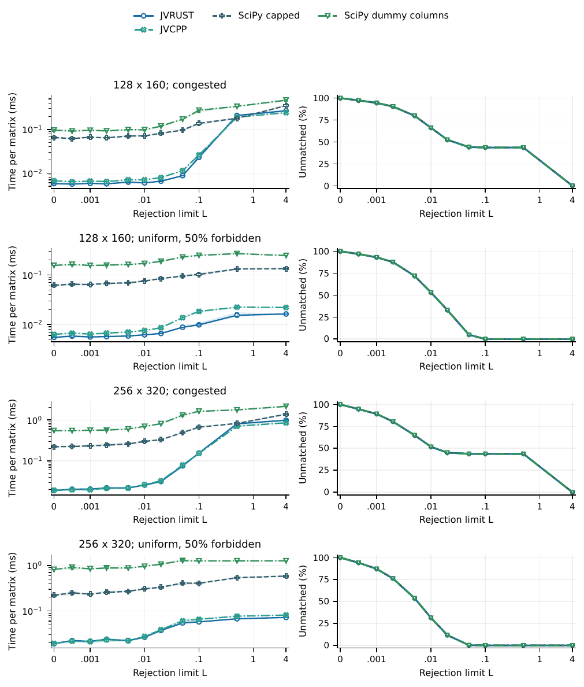
The rejection sweep retains one loss for each native implementation in each current environment: the congested case at . The largest primary native/capped ratio is 1.162 for Rust (0.209 ms versus 0.180 ms); C++ takes 0.191 ms, a ratio of 1.059. Across the full extended grid, Rust has three losses in the primary run and two in the replication; C++ has two and one. Edge fixtures, including expected infeasibility and neighbors of the penalty boundary, pass. These bounded checks are not a general numerical stability proof.
6.9 Repeated memory measurements
For optional at , median additional peak working set in the primary run is 0.125 MiB for Rust, 8.090 MiB for capped SciPy, 8.625 MiB for dummy columns, and 144.715 MiB for square expansion. Replication medians are 0.160, 8.125, 8.633, and 144.730 MiB. The maximum absolute cross-environment difference over the 81 repeated conditions is 0.082 MiB. These are high-water-mark increments measured in fresh processes.
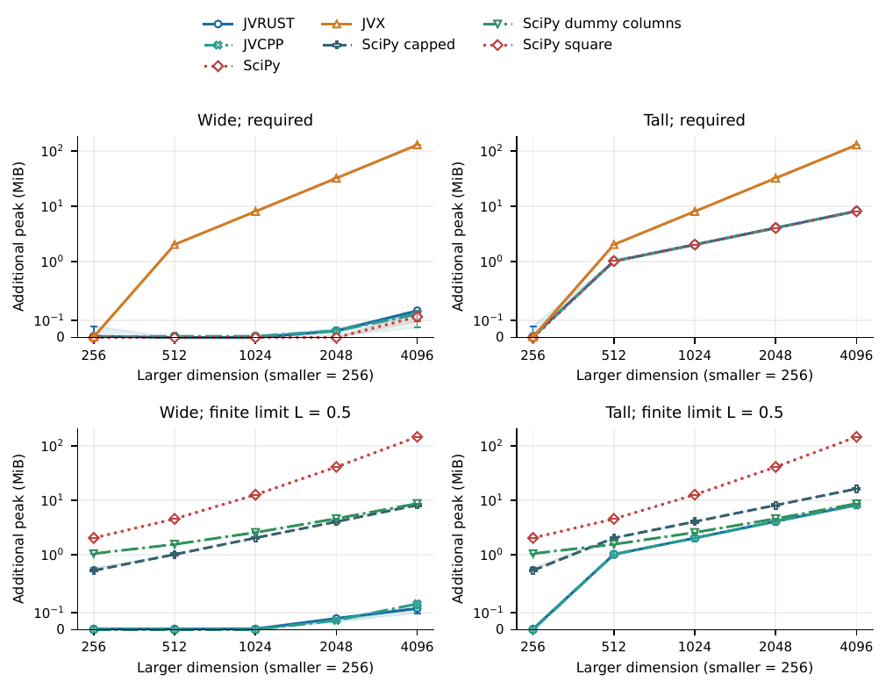
Tall inputs retain an orientation-copy effect. Optional Rust medians are 8.160 and 8.133 MiB in the primary and replication runs, capped SciPy 16.105 and 16.109 MiB, and dummy-column SciPy 8.609 and 8.660 MiB. Our capped adapter constructs the capped array in the original tall orientation before SciPy allocates a transpose; the dummy-column adapter orients first. This additional original-size buffer belongs to the measured adapter, rather than being required by capped-cost assignment. Near-zero increments do not imply zero allocation, and percentage memory ratios become unstable near zero.
6.10 Consistency between Windows Python environments
Both native implementations beat ordinary SciPy in 71/71 required cases and expanded SciPy in five further finite-limit cases in each refreshed Windows environment. Against capped SciPy, Rust wins 119/125 primary and 120/125 replication comparisons; C++ wins 121/125 and 124/125. Thus total native wins are 195/201 and 196/201 for Rust, and 197/201 and 200/201 for C++. The largest native/capped median ratio is about 1.16 for Rust and 1.06 for C++.
Rust retains its native-versus-SciPy median ordering in 200 of 201 comparisons between the two Windows environments; C++ retains 198 of 201. These four combined reversals occur in finite-limit cases and include close medians. Appendix A gives the affected settings. All 3,925 compared numerical objectives agree exactly, with no recorded cardinality differences.
The batch ordering is also workload dependent. The four-worker Rust/C++ ordering changes between environments for the 64-problem required workload, while C++ is faster on the finite-limit workload and Rust on the 1024-problem workload in both. Such differences characterize the measured builds and sessions rather than a language-level effect.
Across all evaluated methods, 69 of 2,104 within-case pairwise median orderings reverse, and the fastest median changes in 26 of 204 cases. Requiring a relative gap above 2% in both environments leaves six reversals; above 5% leaves two; above 10% leaves none. These are post-hoc descriptive filters, not significance thresholds.
Median time(3.11.18)/time(3.14.10) ratios over equally weighted method/case settings are 1.027 for single calls, 1.020 for batches, 1.025 for formulations, 1.023 for scaling, and 1.023 for extended cases. These summaries describe the designed grid. Dependency versions, native binaries, and sessions differ, preventing an isolated interpreter-speed interpretation.
6.11 Controlled LSAPE results
Table 9 names the original and unchanged one-sided baselines separately from the three adapted arms. Table 10 decomposes the 12 preselected cases; Table 11 retains the complete-grid primary comparison, including regressions.
| Arm | Column-major buffer | Implementation |
|---|---|---|
| Original O | ; stride | Unchanged LSAPE-v4, endpoint prices |
| One-sided U | ; stride | Same upstream function, prices |
| Compact scan S | ; stride | LSAPE-v4-1S specialization with ordered reached-row rejection scans |
| Compact tracked T | ; stride | Same specialization with guarded rejection tracking and scan fallback |
| Padded tracked P | ; stride | Tracked specialization reading U’s fully materialized one-sided buffer geometry |
| Shape / series | (ms) | unmatched (%) | ||||
|---|---|---|---|---|---|---|
| 1024 1024, F | 18.063 | 0.00 | 0.42 [0.41, 0.42] | 1.11 [1.11, 1.12] | 0.46 [0.46, 0.47] | 0.74 [0.72, 0.75] |
| 512 640, F | 7.506 | 0.00 | 2.14 [2.14, 2.25] | 1.14 [1.12, 1.14] | 2.45 [2.39, 2.56] | 0.83 [0.82, 0.84] |
| 640 512, F | 7.383 | 0.00 | 0.56 [0.53, 0.56] | 1.20 [1.18, 1.23] | 0.67 [0.63, 0.69] | 0.95 [0.95, 0.96] |
| Blocks 1024 1280, F | 32.404 | 43.75 | 1.04 [0.97, 1.05] | 1.13 [1.11, 1.13] | 1.15 [1.10, 1.19] | 0.77 [0.76, 0.77] |
| Blocks 1280 1024, F | 33.711 | 43.75 | 1.39 [1.34, 1.40] | 1.13 [1.09, 1.15] | 1.52 [1.52, 1.60] | 0.92 [0.88, 0.93] |
| 256 1024, F | 3.505 | 0.00 | 2.27 [2.21, 2.28] | 1.09 [1.09, 1.10] | 2.48 [2.43, 2.49] | 1.00 [1.00, 1.00] |
| 1024 256, F | 3.929 | 0.00 | 0.93 [0.93, 0.94] | 1.15 [1.13, 1.15] | 1.06 [1.05, 1.08] | 0.97 [0.97, 1.00] |
| 64 16384, F | 7.515 | 0.00 | 1.26 [1.24, 1.28] | 1.06 [1.05, 1.08] | 1.34 [1.33, 1.35] | 0.85 [0.83, 0.87] |
| 16384 64, F | 8.303 | 0.00 | 0.98 [0.96, 0.98] | 1.16 [1.16, 1.17] | 1.14 [1.13, 1.14] | 0.76 [0.74, 0.76] |
| 64 16384, S | 5.631 | 11.33 | 0.97 [0.97, 0.98] | 1.03 [0.98, 1.04] | 1.00 [0.97, 1.00] | 0.86 [0.86, 0.92] |
| 16384 64, S | 5.937 | 11.33 | 0.94 [0.93, 0.98] | 1.14 [1.14, 1.15] | 1.08 [1.07, 1.12] | 0.83 [0.81, 0.84] |
| Ties 256 320, Q | 0.330 | 27.64 | 0.92 [0.90, 0.97] | 1.16 [1.14, 1.16] | 1.07 [1.03, 1.13] | 1.00 [0.98, 1.02] |
| Case block | Cases | Gains for P | Regressions for P | Within band |
|---|---|---|---|---|
| A: squares | 8 | 0 | 8 | 0 |
| B: uniform 5:4 rectangles | 16 | 4 | 10 | 2 |
| C: congested 5:4 rectangles | 8 | 8 | 0 | 0 |
| D: uniform 4:1 rectangles | 16 | 13 | 0 | 3 |
| E: extreme rectangles | 12 | 10 | 0 | 2 |
| F: threshold ties | 7 | 3 | 0 | 4 |
| All cases | 67 | 38 | 18 | 11 |
Across all 67 cases, changing only the one-sided formulation in unchanged upstream code () produces 20 gains, 41 regressions, and six estimates inside the descriptive 3% band. The original-to-specialized-padded ratio has 38 gains above 1.03, 18 regressions below 0.97, and 11 estimates inside the band (Table 11). The compact tracked total has 35 gains, 24 regressions, and eight inside. Matched-layout specialization exceeds 1.03 in all 67 cases, with central estimates from 1.031 to 1.268. These are descriptive classifications rather than significance or equivalence tests. One-sided costs alone regress more often than they improve, while specialization improves relative to unchanged one-sided LSAPE on this grid; neither total adaptation universally improves on original LSAPE.
Formulation explains the largest measured changes. At fixed-limit , , , and . The transposed case instead has . At , specialization gives , yet the total is . Separately summarized factor medians need not multiply exactly. The study retains losses on squares and moderate rectangles rather than attributing the total ratio to specialization alone.
The compact scan/tracked ratio lies inside the descriptive 3% band in all 67 cases, with estimates from 0.974 to 1.021. This campaign establishes no consistent practical benefit from rejection-slack tracking. The layout ratio exceeds 1.03 in 22 cases, favoring padded storage, with 45 inside and none below 0.97. Compact T has eleven favorable central estimates versus P, all inside the band; the largest estimate is 1.028. Thus compact layout has no gain beyond that band on this grid. The congested case has . Layout sensitivity does not establish a cache-conflict mechanism, and common interface work may mask kernel effects.
Realized rejection also changes interpretation. The fixed-limit case leaves 99.61% of original rows unmatched while matching the entire smaller side. Its size-dependent-limit counterpart leaves 11.33% of the smaller side unmatched. Reporting both fractions distinguishes dimensional surplus from optional rejection. These finite-grid observations characterize the recorded host, compiler, timing contract, and inputs, not a population ranking or an equivalence result.
6.12 Real-video tracking and captured assignments
Two supplied 999-frame clips derived from MOT16-04 and MOT20-03 [21, 22] drive Centroid and SORT [23] in the pinned pyppbox V4 checkout [24], using frozen GT boxes or cached RF-DETR Nano detections at 768 pixels and confidence 0.20 [25]. The refreshed 29 October campaign uses the current solvers and Python 3.11.18. All 72 method/pipeline settings are shuffled within each of nine rounds. Tracker-update timing excludes decoding, detection, Person construction, and evaluation. Separate profiling, capture, and common-matrix replay passes preserve the timing boundaries. Supplied-box scores use motmetrics [26]. Appendix C gives the protocol and absolute results. The toolbox was introduced in the PoseTReID extension study [27].
Across JVRUST, JVHYBRID, and JVCPP, SciPy/native common-matrix replay ratios span 1.858–3.259. Centroid-update ratios are smaller, 1.042–1.147; SORT ratios span 0.982–1.049, including slightly slower native medians. Table 12 retains every method. Its ranges are extrema over the designed pipelines, not timing-round IQRs or a population distribution. The application study demonstrates the attenuation of assignment-interface gains in tracker updates.
All recorded common-corpus objectives agree exactly with SciPy. An independent direct-API re-solve also passes all 150,780 backend/matrix checks with zero objective gaps, including separate float64 accumulation and math.fsum totals on represented costs. Equal-cost choices can propagate different identities in Centroid; its supplied-box accuracy changes remain mixed, while SORT’s scores agree across methods. These clips establish neither a general accuracy advantage, detector-plus-tracker throughput gain, nor an application benefit from substituting finite-limit matching.
| Method | Replay float32 | Replay float64 | Centroid update | SORT update |
|---|---|---|---|---|
| lapjv | 0.759–1.852 | 0.722–1.846 | 0.936–1.076 | 0.995–1.018 |
| lapjvx | 0.787–1.925 | 0.728–1.887 | 0.943–1.081 | 0.996–1.015 |
| lapjvxa | 0.872–2.053 | 0.830–1.966 | 0.973–1.072 | 0.990–1.042 |
| lapjvh | 2.041–3.145 | 1.878–2.795 | 1.063–1.147 | 1.008–1.034 |
| laprust | 2.032–3.259 | 1.918–2.739 | 1.051–1.142 | 0.984–1.049 |
| lapcpp | 2.002–3.065 | 1.858–2.626 | 1.042–1.132 | 0.982–1.037 |
| scipy | 1.000–1.000 | 1.000–1.000 | 1.000–1.000 | 1.000–1.000 |
| lapjvs | 0.773–2.057 | 0.733–1.898 | 0.926–1.081 | 0.986–1.033 |
| lapjvc | 0.758–0.995 | 0.713–0.927 | 0.969–1.014 | 0.992–1.029 |
7 Discussion
7.1 Contribution relative to existing methods
The current native implementations beat ordinary SciPy in all 71 required cases per environment, and Rust wins 119–123 of 125 capped finite-limit comparisons across the four environments, with a maximum latency ratio about 1.16. C++ wins 121–124 of those capped comparisons. These counts refer to specified adapters and measured releases; they do not imply superiority over every compact optional-assignment solver.
The contribution is software integration and performance evaluation within established assignment methods. Rectangular JV with row-reduction initialization from Volgenant (1996) [9] and its refinement and structure-aware use for outsourcing by Bijsterbosch and Volgenant (2010) [8] precede the present implementation. We integrate explicit reduction budgets, uniform rejection inside augmenting search, and reusable batch workspaces in Python-facing Rust, hybrid, and C++ implementations. The full-call experiments characterize that integration without isolating gains from the terminal, reductions, scanning policies, workspace reuse, or output adapters individually.
The refreshed LSAPE study supplies a complementary decomposition within Hungarian code: one-sided costs alone have 20 gains and 41 regressions, while matched-layout specialization exceeds the declared 3% threshold in all 67 cases. The padded total has 38 gains and 18 regressions; the compact total has 35 and 24. Compact layout has no gain beyond the band, and all rejection-tracking estimates remain inside it. These within-LSAPE findings do not explain JV-specific gains. Isolating the JV reduction and terminal policies still requires ablations against otherwise identical implementations. Capped SciPy controls dimensional expansion but differs in initialization, search, temporary storage, and adapter work.
7.2 Performance is determined by formulation and structure
The wide and finite-limit results demonstrate that transformed problem size can dominate practical interface performance. SciPy’s required rectangular results and the remaining finite-limit congestion losses also show why avoiding padding cannot explain every speed difference. The native implementations beat SciPy on the main required block case, yet capped SciPy wins the primary Windows finite-limit block formulation case. Both native methods win that formulation case in the Linux runs. Objective, initialization, reduction policy, cost structure, and adapter work all matter.
The revised constant reduction allowance gives the implementation bound in Section 4.4. Favorable timings still do not establish an asymptotic advance over established rectangular methods. Congestion and ties can change initialization and augmenting-search work, motivating phase-level profiling and matched policy ablations before attributing gains to an individual rule.
The scaling curves retain multiple native-versus-capped ordering changes. The revised policy applies a common scan allowance across shapes and a required-only stall cutoff, replacing the older shape-specific caps. Its development used structured workload families, so these measurements characterize those families without independently validating optimal heuristic choices or predicting arbitrary matrices.
7.3 Implementation language and completion kernel
The three implementations compare implementation choices under a shared algorithmic design. JVHYBRID changes only square completion and provides no consistent whole-call benefit on the evaluated required square workloads. Differences on the shared rectangular Rust path do not establish algorithmic differences; timing variation, adapter overhead, and build effects are not isolated.
Rust is faster than C++ in nine of twelve primary single-matrix cases, while the large-grid and batch orderings vary by workload and environment. Extreme tall inputs retain larger differences. The current Linux runs also change some rankings, including the four-worker batch comparison in Appendix B. None of these comparisons isolates an implementation-language effect.
7.4 Implications for applications
Applications should distinguish required matching from finite-limit matching and benchmark their own shapes, thresholds, and cost structures. The native methods win the required congestion grid, but capped SciPy retains a few finite-limit advantages. Capped costs are not universally the fastest evaluated compact adapter: dummy columns can be faster on extreme tall inputs. The tall-memory difference reflects the extra original-size buffer described in Section 6.9. Native batching benefits independent problems available together; a tracker with one assignment at a time cannot exploit inter-problem batching without changing its work schedule.
An assignment acceleration is not an end-to-end application acceleration of the same factor. Cost construction, motion prediction, feature extraction, detection, and bookkeeping can dominate a tracking pipeline. The follow-up in Section 6.12 measures tracker-update time, supplied-box accuracy and identity switches on two real-video clips, while retaining the distinction from detector-plus-tracker frame rate. Its assignment gains are attenuated in tracker updates, especially for SORT.
Finite-limit integration also requires agreement on ties and numeric precision. Matching decisions at or near a penalty boundary may differ across implementations while retaining an equal or nearly equal objective. Tests should distinguish objective equivalence from a requirement for identical selected pairs.
8 Limitations and threats to validity
The controlled study covers four Windows/Linux and Python environments, four generated inputs per timing case, and nine timing rounds. Dependencies, interpreter builds, binaries, batch placement, and sessions differ. Windows batching uses four logical processors on two physical cores. Linux selects four logical CPUs, but the fresh run records do not establish their physical-core mapping, CPU model, governor, or fixed clock. These data do not isolate operating-system, compiler, interpreter, or physical-core scaling effects. Frequency and background activity are uncontrolled. Timing IQRs describe rounds on the selected inputs, not uncertainty over all assignment problems. Complete compiler flags and source-to-wheel lineage are not independently established.
The controlled runtime tables use float64 costs; the application study additionally uses represented float32 costs and widened views. Targeted regressions exercise the arithmetic correction, including cancellation, penalty rounding, and original-input totals. Float64 scratch cannot recover information lost during conversion and does not ensure exactness over arbitrary dynamic ranges, subnormal penalties, or near-ties. Precision modes beyond the measured inputs are not comprehensively characterized by these runtime tables.
Saved regression records from the archived 28 October 2026 development payload provide a concrete limitation. For float32-stored , with and , the saved development Rust/hybrid and SciPy outputs have required-assignment cost , while the exact optimum is . The exact gap is , although both totals round to in binary64. Thus equality of recorded binary64 totals is not an exact-arithmetic optimality certificate. This development witness was not rerun against the installed wheels used in the performance campaigns.
The main finite-limit baselines use explicit square augmentation where no equivalent public limit API exists. Section 6.5 adds smaller dummy-column and original-dimension capped formulations, including a uniform-penalty specialization of [7]. The completed LSAPE-v4 comparison in Section 6.11 evaluates formulation and implementation changes within that Hungarian solver. Direct JV-versus-LSAPE comparisons, the exact implementation used for the 2016 timings, and other specialized methods in [6, 7] remain outside the measured scope. SciPy through our adapter is not a substitute for evaluating every specialized LSAPE kernel, and adapter work is part of the reported interface times.
The refreshed LSAPE sessions occurred on the same day/window and host. Three fresh process IDs do not establish independent-day replication. Their observed ranges and 3% band classifications are descriptive; they do not prove significance, equivalence, or robustness across days. The unchanged patch already uses double arithmetic and a guarded rejection-cache fallback, but source review and 10,190 strict cases do not prove arbitrary-range numerical exactness. Neither a general rejection-tracking benefit, LSAPE memory savings, nor isolated preprocessing, code-generation, or kernel-phase effects are established.
The initialization policy was selected using development workload families. A common four-scan allowance and required-only stall cutoff replace the earlier shape-specific reduction limits, but this revision does not establish held-out optimality or isolate the performance contribution of each rule. Fresh seeds alone would not remove family-level selection dependence. Previously saved development validations and the final campaign must not be described as independent policy-selection holdouts.
The controlled assignment suites are synthetic; the application follow-up covers only two supplied 999-frame clips, two detection sources and two simple trackers. Several main finite-limit cases reject no smaller-side rows at the optimum; the formulation experiment covers rejection-heavy inputs and a congested finite-limit case. The scaling experiment covers fixed aspect ratios and a fixed smaller dimension, but uses only four random matrices per size and no held-out application distribution. Its linear and log-log curves are descriptive measurements, not empirical proofs of asymptotic bounds. These deliberately selected cases broaden coverage but do not establish application representativeness. Broader application traces, held-out structured instances and additional detector/tracker configurations would improve external validity.
The base memory observations use one trial per condition; the added sweep uses five fresh processes and paired inputs per condition. Windows peak-working-set and Linux high-water-RSS increments use different operating-system counters and are not pooled. A zero increment can reflect headroom below an earlier process peak rather than zero workspace allocation; such zeros are frequent in the Linux runs. These observations do not establish exact allocation counts, cross-platform resident-memory bounds, or long-running pool-retention behavior.
The three mathematical propositions justify the reformulations and final certificate in exact arithmetic. They do not prove all code paths, error cases, and floating-point transitions. Passing tests and exhaustive small cases complement, rather than replace, that distinction.
9 Conclusion
The paper integrates and evaluates Rust, hybrid Rust/C++, and C++ rectangular JV implementations with bounded row reductions, uniform rejection during augmenting search, and batched Python calls under equivalent objectives. Established initialized rectangular JV and structured outsourcing [9, 8], compact error-correcting methods, and SciPy’s modified rectangular JV provide the precedents. The derivations and implementation bound imply neither algorithmic priority nor a general floating-point correctness proof.
Across four environments, Rust wins 71/71 ordinary required, 119–123/125 capped finite-limit, and five expanded finite-limit comparisons. C++ wins 71/71, 121–124/125, and five, respectively. Remaining native/capped losses reach about 1.16 times latency. Rust four-worker loop/batch ratios are 2.51–3.86 for 64 required problems, 1.82–3.22 for 16 finite-limit problems, and 4.74–5.43 for 1024 tiny problems; tiny one-worker batching gives 1.89–2.37 times. The Linux Python 3.11.18 finite-limit one-worker batch is slightly slower than its loop. These complete-call results do not isolate workspace reuse or individual reduction rules.
All 3,925 compared numerical objectives agree exactly across the four environments, with no recorded timing-cardinality differences. Windows and Linux memory counters require separate interpretation. The independent LSAPE study retains its within-Hungarian formulation and specialization findings, including regressions and no consistent rejection-tracking benefit. On the two supplied video clips, assignment-replay gains became smaller Centroid-update gains and near-equal SORT medians, without establishing detector-plus-tracker acceleration or general tracking-accuracy benefits. Further work should isolate initialization policies, extend independent-day, hardware, and compiler coverage, and broaden application evidence.
Data and software availability
The current controlled measurements evaluate laprust 1.2.0 [14], lapcpp 1.2.0 [16], and LAPX 0.13.0 [15]. The paper repository is github.com/rathaROG/lap-paper. Standalone drivers and dependencies are under benchmark/. The immutable benchmark/controlled-windows-20261029.zip and benchmark/controlled-linux-20261029.zip retain the four current controlled campaigns, with raw observations, audits, input identities, native-module hashes, and available provenance. They contain 35,784 timing samples and 1,660 memory observations. The verifier checks archive integrity, summary arithmetic, and the manuscript’s numeric tables without running measurements. Figure generation and source manifests identify the measured inputs used for current plots.
The separate development regression records, original probe source, and recorded identities are preserved in benchmark/numerical-regression-evidence-20261028.json.
The refreshed LSAPE observations, strict validation, build/source identities, independent audit, and preselected/all-case tables are in benchmark/lsape-windows-20261029.zip. Three fresh-process sessions and all 9,045 round means remain separate. These records support arithmetic checks of the within-LSAPE results without executing a solver and add no JV-versus-LSAPE timings.
The refreshed application data are in benchmark/application-windows-20261029.zip, with raw observations under real_world/observations.zip, independently derived table projections, and saved-data/direct-API audit reports. They include predictions, metrics, round means, captured matrices, source snapshots, package/binary identities, and checksums. The four frozen GT/RF input caches remain unchanged; original detector preparation is retained as input provenance rather than new timing evidence.
Acknowledgements
The implementations retain attribution to Tomas Kazmar’s lap, Vadim Markovtsev’s src-d/lapjv, and Christoph Heindl and contributors to py-lapsolver. The assignment and error-correction literature provides the theoretical background and comparison points for this implementation study.
AI assistance disclosure
The first author led the research and proposed the approach studied in this paper. AI coding assistants (OpenAI Codex with GPT-6 Astra and GPT-6.1 Sol, and Anthropic Claude Code with Claude Opus 5.5) assisted, under the first author’s direction, with literature retrieval, source inspection, implementation changes, experiment-script preparation and execution, figure generation, and manuscript drafting. The raw artifacts identify the computations supporting the reported results. The first author has cross-checked and reviewed the scientific claims, attribution, computations, and final text, and takes responsibility for the manuscript.
References
- [1] Yifu Zhang, Peize Sun, Yi Jiang, Dongdong Yu, Fucheng Weng, Zehuan Yuan, Ping Luo, Wenyu Liu, and Xinggang Wang. ByteTrack: Multi-object tracking by associating every detection box. In European Conference on Computer Vision (ECCV), 2022. URL https://arxiv.org/abs/2110.06864.
- [2] Tomas Kazmar et al. lap. Source implementation. URL https://github.com/gatagat/lap. Evaluated through its LAPX adaptation.
- [3] R. Jonker and A. Volgenant. A shortest augmenting path algorithm for dense and sparse linear assignment problems. Computing, 38:325–340, 1987. doi: 10.1007/BF02278710.
- [4] David F. Crouse. On implementing 2d rectangular assignment algorithms. IEEE Transactions on Aerospace and Electronic Systems, 52(4):1679–1696, 2016. doi: 10.1109/TAES.2016.140952.
- [5] Sébastien Bougleux and Luc Brun. Linear sum assignment with edition. Technical report, Normandie Université, 2016. URL https://arxiv.org/abs/1603.04380.
- [6] William Jones, Aziem Chawdhary, and Andy King. Optimising the Volgenant–Jonker algorithm for approximating graph edit distance. Pattern Recognition Letters, 87:47–54, 2017. doi: 10.1016/j.patrec.2016.07.024. URL https://kar.kent.ac.uk/56765/1/main.pdf.
- [7] Sébastien Bougleux, Benoit Gaüzère, David B. Blumenthal, and Luc Brun. Fast linear sum assignment with error-correction and no cost constraints. Pattern Recognition Letters, 134:37–45, 2020. doi: 10.1016/j.patrec.2018.03.032. First published online in 2018.
- [8] J. Bijsterbosch and A. Volgenant. Solving the rectangular assignment problem and applications. Annals of Operations Research, 181:443–462, 2010. doi: 10.1007/s10479-010-0757-3.
- [9] A. Volgenant. Linear and semi-assignment problems: A core oriented approach. Computers & Operations Research, 23(10):917–932, 1996. doi: 10.1016/0305-0548(96)00010-X.
- [10] David F. Crouse. The Tracker Component Library: Free routines for rapid prototyping. IEEE Aerospace and Electronic Systems Magazine, 32(5):18–27, 2017. Routines assign2DMissedDetect and assign2DFull, https://github.com/USNavalResearchLaboratory/TrackerComponentLibrary, accessed 22 October 2026.
- [11] The MathWorks, Inc. assignjv, assignmunkres, and assignauction. Sensor Fusion and Tracking Toolbox documentation, introduced in R2018b. URL https://www.mathworks.com/help/fusion/ref/assignjv.html. Accessed 22 October 2026.
- [12] SciPy developers. Documentation for scipy.optimize.linear_sum_assignment. URL https://docs.scipy.org/doc/scipy/reference/generated/scipy.optimize.linear_sum_assignment.html. Accessed 2026-10-22; experiments use SciPy 1.18.1 and 1.17.1.
- [13] Vadim Markovtsev et al. lapjv. Source implementation. URL https://github.com/src-d/lapjv. Accessed 2026-10-22.
- [14] Ratha SIV. laprust: Native Rust linear assignment solvers with implicit rejection and batch solving. Version 1.2.0, 2026a. URL https://github.com/rathaROG/laprust.
- [15] Ratha SIV. LAPX: Linear assignment problem solvers. Version 0.13.0, 2026b. URL https://github.com/rathaROG/lapx.
- [16] Ratha SIV. lapcpp: Native C++ linear assignment solvers with implicit rejection and batch solving. Version 1.2.0, 2026c. URL https://github.com/rathaROG/lapcpp.
- [17] Christoph Heindl et al. py-lapsolver. Source implementation. URL https://github.com/cheind/py-lapsolver. Evaluated through its LAPX adaptation.
- [18] Russ J. Vander Wiel and Nikolaos V. Sahinidis. The assignment problem with external interactions. Networks, 30(3):171–185, 1997. doi: 10.1002/(SICI)1097-0037(199710)30:3<171::AID-NET3>3.0.CO;2-I.
- [19] Sébastien Bougleux, Luc Brun, et al. LSAPE bipartite matching toolbox. Version 4, July 2017, 2017. URL https://bougleux.users.greyc.fr/lsape/.
- [20] Ratha SIV and contributors. Float32 arithmetic can return a suboptimal assignment. src-d/lapjv issue 94, 2026. URL https://github.com/src-d/lapjv/issues/94. Opened 28 October 2026; accessed 29 October 2026.
- [21] Anton Milan, Laura Leal-Taixé, Ian Reid, Stefan Roth, and Konrad Schindler. MOT16: A benchmark for multi-object tracking. arXiv:1603.00831, 2016. URL https://arxiv.org/abs/1603.00831.
- [22] Patrick Dendorfer, Hamid Rezatofighi, Anton Milan, Javen Shi, Daniel Cremers, Ian Reid, Stefan Roth, Konrad Schindler, and Laura Leal-Taixé. MOT20: A benchmark for multi object tracking in crowded scenes. arXiv:2003.09003, 2020. URL https://arxiv.org/abs/2003.09003.
- [23] Alex Bewley, Zongyuan Ge, Lionel Ott, Fabio Ramos, and Ben Upcroft. Simple online and realtime tracking. In IEEE International Conference on Image Processing (ICIP), 2016. doi: 10.1109/ICIP.2016.7533003. URL https://arxiv.org/abs/1602.00763.
- [24] Ratha SIV. pyppbox: Toolbox for people detecting, tracking, and re-identifying. Version 4.0.0, 2026d. URL https://github.com/rathaumons/pyppbox. Source commit f3f1e8e671d7cad7e0df2f2469ae0f5ee6c27258; accessed 27 October 2026.
- [25] Isaac Robinson, Peter Robicheaux, and Matvei Popov. RF-DETR. Roboflow software, 2025. URL https://github.com/roboflow/rf-detr. Software citation metadata from CITATION.cff; first released 20 March 2025. Evaluated package version 1.10.1; accessed 27 October 2026.
- [26] Christoph Heindl, Jack Valmadre, and contributors. py-motmetrics: Metrics for multiple object tracker benchmarking. Version 1.4.0, 2022. URL https://github.com/cheind/py-motmetrics/tree/v1.4.0. Software; accessed 27 October 2026.
- [27] Ratha Siv, Matei Mancas, Bernard Gosselin, Dona Valy, and Sokchenda Sreng. People tracking and re-identifying in distributed contexts: Extension study of PoseTReID. In 2022 9th International Conference on Electrical Engineering, Computer Science and Informatics (EECSI), pages 337–342, Jakarta, Indonesia, 2022. IEEE. doi: 10.23919/EECSI56542.2022.9946587.
Appendix A Windows replication with Python 3.11.18
The full controlled campaign was repeated on Windows with Python 3.11.18, NumPy 2.4.6, and SciPy 1.17.1 on 29 October 2026, using LAPX 0.13.0 and laprust/lapcpp 1.2.0. This run preceded the primary Python 3.14.10 run. Input digests, shuffled schedules, affinity, and measurement protocol match; dependencies, ABI-specific binaries, and sessions differ. Tables A1–A3 report replicated single-call, batch, and formulation medians; Table A4 compares within-environment ratios. Appendix B gives the current Linux campaigns and four-environment comparisons.
The repeated campaign passes 16,800 base enumeration calls, including 80 expected infeasible outcomes, 10,520 formulation validation calls, 1,208 scaling checks, 2,112 extended timed-input checks, and 129 edge checks. Targeted preflight regressions cover precision and initialization. All 3,520 recorded timing objectives and 405 repeated-memory objectives agree exactly with the primary environment, with no recorded timing-cardinality differences. These saved checks do not constitute a universal numerical proof.
A.1 Single-matrix runtime
| Case | JVRUST | JVHYBRID | JVCPP | JVX | JVS | JVC | SciPy |
|---|---|---|---|---|---|---|---|
| Square 128 128 | 67.80 | 68.10 | 73.65 | 112.92 | 112.36 | 272.03 | 275.29 |
| Square 512 512 | 1100.05 | 1101.73 | 1143.72 | 3277.71 | 3316.07 | 6162.62 | 5203.93 |
| Wide 64 512 | 14.37 | 14.63 | 13.91 | 894.05 | 822.73 | 1832.56 | 78.24 |
| Tall 512 64 | 26.94 | 27.07 | 79.24 | 881.99 | 835.70 | 1787.19 | 153.49 |
| Rectangle 256 320 | 84.21 | 83.68 | 80.62 | 176.30 | 177.01 | 4112.26 | 571.38 |
| Blocks 256 320 | 893.97 | 891.95 | 898.48 | 9325.30 | 9675.65 | 5641.60 | 1441.48 |
| Ties 128 160 | 12.81 | 12.77 | 14.31 | 60.95 | 58.27 | 95.33 | 78.67 |
| 128 160, | 12.88 | 13.01 | 19.07 | 516.22 | 447.22 | 2178.37 | 444.91 |
| 256 320, | 69.91 | 71.09 | 78.67 | 3767.38 | 3192.10 | 14972.02 | 2329.49 |
| Tight 128 160, | 9.20 | 9.38 | 14.25 | 446.92 | 391.22 | 2459.69 | 1080.52 |
| Signed 128 160, | 14.21 | 13.84 | 19.86 | 1042.76 | 897.72 | 3079.22 | 445.27 |
| Square 128, | 81.02 | 76.71 | 83.03 | 191.24 | 189.37 | 590.68 | 519.46 |
A.2 Batch runtime
| Method | 64 (64 80) required, ms | 16 (128 160) , ms | 1024 (8 10) required, ms |
|---|---|---|---|
| JVRUST sequential loop | 0.808 | 0.406 | 1.183 |
| JVRUST batch, 1 worker | 0.724 | 0.400 | 0.533 |
| JVRUST batch, 4 workers | 0.317 | 0.223 | 0.250 |
| JVHYBRID batch, 1 worker | 0.730 | 0.413 | 0.539 |
| JVHYBRID batch, 4 workers | 0.325 | 0.222 | 0.263 |
| JVCPP batch, 1 worker | 0.744 | 0.456 | 0.520 |
| JVCPP batch, 4 workers | 0.360 | 0.213 | 0.273 |
| JVX batch, 1 worker | 1.612 | 8.520 | 5.955 |
| JVX batch, 4 workers | 3.023 | 5.584 | 17.882 |
| SciPy sequential loop | 2.828 | 7.759 | 2.881 |
A.3 Formulation comparison
| Case | Unmatched | JVRUST | JVCPP | Square | Dummy cols | Capped |
|---|---|---|---|---|---|---|
| 128 160, | 0.00 | 12.66 | 19.93 | 449.27 | 268.70 | 135.63 |
| 256 320, | 0.00 | 69.54 | 80.38 | 2294.39 | 1334.11 | 572.57 |
| 128 160, | 8.25 | 9.26 | 14.41 | 1068.83 | 259.43 | 104.82 |
| Signed 128 160, | 0.00 | 14.35 | 19.82 | 444.08 | 246.90 | 143.57 |
| Square 128, | 0.00 | 79.79 | 81.98 | 523.20 | 410.09 | 221.09 |
| 128 160, | 87.75 | 5.82 | 6.81 | 840.35 | 173.29 | 74.24 |
| 128 160, | 117.00 | 5.52 | 6.31 | 515.60 | 165.86 | 68.63 |
| Tall 160 128, | 89.50 | 13.13 | 13.97 | 866.69 | 177.30 | 83.80 |
| Wide 64 512, | 18.00 | 8.58 | 8.90 | 2102.53 | 201.66 | 88.98 |
| Blocks 256 320, | 112.00 | 772.10 | 678.34 | 2615.23 | 1670.70 | 741.85 |
A.4 Principal ratios in both runs
| Quantity | Python 3.11.18 | Python 3.14.10 |
|---|---|---|
| t(JVRUST) / t(SciPy), required blocks () | 0.62 | 0.64 |
| t(capped SciPy) / t(JVRUST), minimum noncongested formulation ratio () | 2.77 | 2.69 |
| t(capped SciPy) / t(JVRUST), maximum noncongested formulation ratio () | 12.77 | 11.93 |
| t(JVRUST) / t(capped SciPy), blocks 256 320 () | 1.04 | 1.09 |
| t(JVRUST) / t(capped SciPy), blocks 1024 1280 () | 0.68 | 0.72 |
| t(loop) / t(batch), 1024 (8 10), one worker () | 2.22 | 2.37 |
| t(loop) / t(batch), 1024 (8 10), four workers () | 4.74 | 5.01 |
| t(JVCPP) / t(JVRUST), largest finite-limit ratio in Tables 4/A1 () | 1.55 | 1.56 |
| t(JVCPP) / t(JVRUST), tall 512 64 () | 2.94 | 2.98 |
| JVRUST, 128 160 at in Tables 7/A3 (µs) | 12.66 | 13.35 |
A.5 Consistent orderings and important exceptions
Rust retains its native-versus-SciPy median ordering in 200 of 201 cases, and C++ in 198 of 201. The Rust reversal is an optional congestion setting. The C++ reversals are the optional block formulation, congested scaling, and another optional congestion setting. Figures A1 and A2 retain these changes and the congested scaling sweep. The designed case grid is not an independent application population.
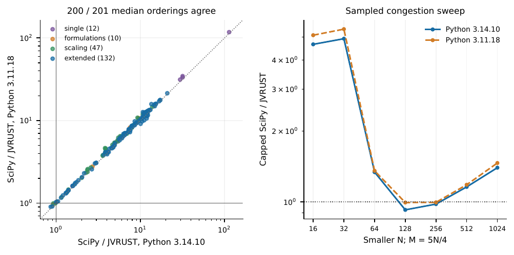
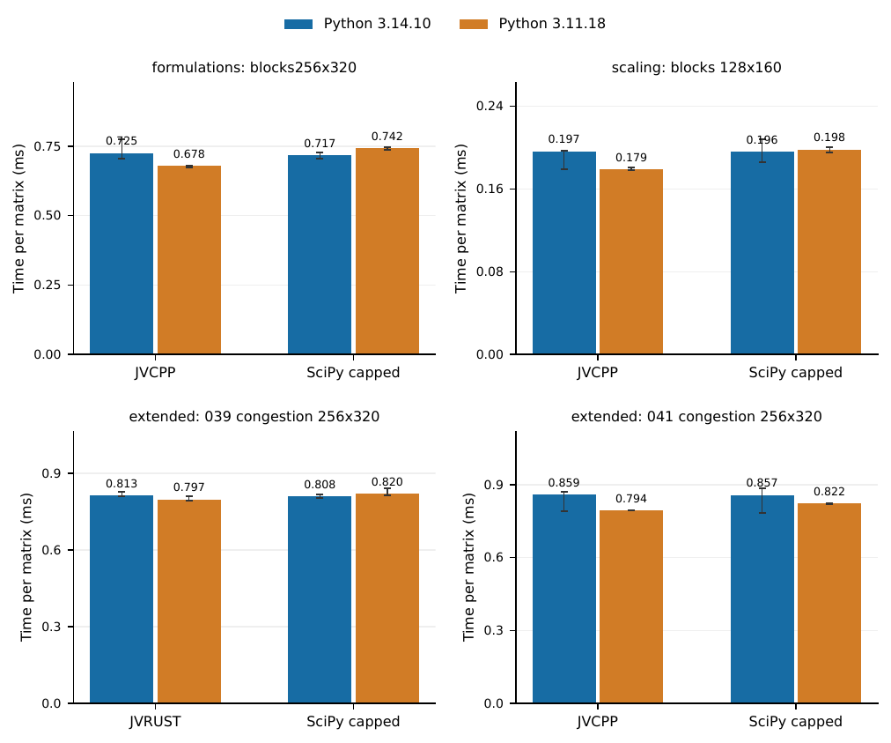
Appendix B Linux replication and four-environment comparison
B.1 Linux execution and validation
Both Linux campaigns evaluate LAPX 0.13.0 and laprust/lapcpp 1.2.0 on 29 October 2026. Python 3.11.18 uses NumPy 2.4.6 and SciPy 1.17.1; Python 3.14.10 uses NumPy 2.5.4 and SciPy 1.18.1. The runs were sequential: Python 3.11.18 from 15:04:56 to 15:25:00 UTC, followed by Python 3.14.10 from 17:34:14 to 17:53:59 UTC. Their platform records identify kernel 7.0.0-38-generic, glibc 2.39, 16 physical cores, and 24 logical processors. Tables and figures compare these observations with the current Windows results in the main text and Appendix A.
Each suite records identities and SHA-256 hashes for seven loaded native modules. Package versions and native identities remain constant within each Linux campaign. The Python version strings identify GCC 14.3.0 for the interpreter build; Python 3.14.10 additionally identifies its Anaconda packaging. These interpreter strings do not establish the native solvers’ compilers or build flags. The fresh records report the processor only as x86_64 and do not capture a CPU model, logical-to-physical topology, or frequency governor.
Single-matrix timings use logical CPU 0, and Linux batch timings select logical CPUs 0, 2, 4, and 6 with one or four requested native workers. These are four selected logical processors; distinct physical cores are not inferred from the fresh records. Windows uses logical CPUs 0–3, whose captured topology spans two physical cores. Visible BLAS pools use one thread. Neither affinity nor the available utilization samples establish a fixed operating frequency or isolation from background activity. Binaries, interpreter builds, operating-system behavior, and batch placement differ across platforms, preventing attribution to any single factor.
Each Linux collection contains 204 timing cases, 994 method/case settings, 8,946 samples, and 415 memory observations, without excluded settings. Independent saved-data audits recompute nine-round summaries and repeated-memory summaries and verify all frozen input identities and method schedules. All 3,925 compared numerical objectives agree exactly in every pairwise comparison among the four current Windows/Linux environments, with no recorded timing-cardinality differences. Individual and batch records retain their validation flags rather than every objective value; memory records do not contain cardinalities.
The recorded Linux validation covers 16,800 base enumeration calls, including 80 expected infeasible calls, and 10,520 formulation validation calls. It also validates 336 single-instance outputs, 11,040 batch outputs, 1,208 scaling objectives, and 2,112 extended timed-input objectives. The 23 edge fixtures produce 129 checks, including 15 expected infeasible outcomes. All pass. Full installed-package Python suites and native Cargo/CMake tests are not claimed for these run-only campaigns. The archive retains raw timing samples, input identities, validation records, repeated-memory trials, and the native-module identities used in each suite.
B.2 Single-matrix runtime
Tables B1 and B2 report the current Linux single-call comparison with the workload definitions of Table 4. Their finite-limit SciPy, JVS, and JVC entries include square expansion; compact finite-limit baselines appear in Tables B5 and B6. Each entry is a within-environment median, without pooling Python versions or operating systems.
| Case | JVRUST | JVHYBRID | JVCPP | JVX | JVS | JVC | SciPy |
|---|---|---|---|---|---|---|---|
| Square 128 128 | 70.70 | 69.14 | 71.96 | 131.11 | 128.16 | 238.80 | 262.73 |
| Square 512 512 | 1091.81 | 1097.70 | 1162.56 | 3995.39 | 3998.31 | 5351.80 | 4968.46 |
| Wide 64 512 | 15.66 | 14.83 | 15.77 | 453.43 | 405.78 | 973.19 | 71.94 |
| Tall 512 64 | 29.69 | 27.12 | 77.95 | 469.50 | 420.89 | 1225.87 | 140.89 |
| Rectangle 256 320 | 91.39 | 84.65 | 90.95 | 172.45 | 173.56 | 3841.81 | 545.58 |
| Blocks 256 320 | 909.14 | 889.29 | 936.36 | 11690.91 | 11803.00 | 5270.54 | 1406.16 |
| Ties 128 160 | 13.28 | 13.02 | 13.50 | 55.47 | 54.54 | 79.81 | 77.83 |
| 128 160, | 13.73 | 13.62 | 17.33 | 429.65 | 426.72 | 1956.82 | 428.64 |
| 256 320, | 69.24 | 68.74 | 71.26 | 2613.64 | 2581.33 | 13518.42 | 1742.44 |
| Tight 128 160, | 9.04 | 9.09 | 13.33 | 369.28 | 363.77 | 2265.43 | 1059.42 |
| Signed 128 160, | 14.26 | 14.17 | 17.81 | 856.54 | 862.31 | 2707.66 | 432.41 |
| Square 128, | 75.06 | 75.73 | 79.85 | 206.95 | 205.97 | 460.90 | 500.24 |
| Case | JVRUST | JVHYBRID | JVCPP | JVX | JVS | JVC | SciPy |
|---|---|---|---|---|---|---|---|
| Square 128 128 | 70.51 | 69.28 | 69.29 | 131.18 | 127.19 | 238.76 | 262.24 |
| Square 512 512 | 1093.52 | 1098.14 | 1142.62 | 4003.35 | 3983.79 | 5353.62 | 4962.35 |
| Wide 64 512 | 15.85 | 14.76 | 14.90 | 450.26 | 406.18 | 972.37 | 71.84 |
| Tall 512 64 | 29.78 | 27.15 | 77.27 | 469.09 | 422.35 | 1226.16 | 140.87 |
| Rectangle 256 320 | 91.53 | 84.56 | 85.03 | 172.97 | 174.35 | 3823.44 | 543.67 |
| Blocks 256 320 | 894.76 | 889.43 | 926.88 | 11687.83 | 11682.57 | 5246.18 | 1401.20 |
| Ties 128 160 | 13.16 | 12.90 | 14.24 | 55.54 | 54.89 | 79.28 | 74.63 |
| 128 160, | 13.64 | 13.57 | 17.32 | 431.37 | 425.56 | 1949.79 | 428.10 |
| 256 320, | 69.08 | 68.56 | 71.16 | 2631.48 | 2585.38 | 13467.57 | 1741.14 |
| Tight 128 160, | 8.96 | 8.96 | 13.25 | 372.17 | 359.49 | 2262.74 | 1054.42 |
| Signed 128 160, | 14.15 | 14.05 | 17.88 | 864.11 | 862.74 | 2698.93 | 425.02 |
| Square 128, | 75.23 | 75.54 | 79.64 | 206.84 | 206.97 | 460.40 | 499.16 |
All three native methods beat SciPy on the required congested case in both Linux runs. JVRUST takes 0.909 ms in Python 3.14.10 and 0.895 ms in Python 3.11.18, compared with SciPy’s 1.406 and 1.401 ms. This required-assignment result is distinct from finite-limit matching. Rust is faster than C++ in eleven of twelve Linux Python 3.14.10 single-call cases and nine of twelve Python 3.11.18 cases. These descriptive orderings concern particular builds, inputs, and sessions rather than an isolated language effect.
B.3 Batch runtime
Tables B3 and B4 report complete-batch latency, including output construction. For 1024 required problems, Rust’s loop/batch ratios are 1.93 with one worker and 5.43 with four workers in Linux Python 3.14.10; Python 3.11.18 gives 1.89 and 5.15. Four-worker ratios for the other two Linux workloads range from 3.15 to 3.86. One-worker batching does not always improve latency: the Python 3.11.18 finite-limit batch is about 2.2% slower than its loop. Ratios above four against a Python loop combine parallel execution with call and output overhead and do not establish superlinear scaling. The different Windows and Linux logical-CPU groups further limit platform attribution.
| Method | 64 (64 80) required, ms | 16 (128 160) , ms | 1024 (8 10) required, ms |
|---|---|---|---|
| JVRUST sequential loop | 0.863 | 0.397 | 1.082 |
| JVRUST batch, 1 worker | 0.773 | 0.391 | 0.562 |
| JVRUST batch, 4 workers | 0.229 | 0.126 | 0.199 |
| JVHYBRID batch, 1 worker | 0.764 | 0.409 | 0.561 |
| JVHYBRID batch, 4 workers | 0.217 | 0.118 | 0.195 |
| JVCPP batch, 1 worker | 0.816 | 0.419 | 0.565 |
| JVCPP batch, 4 workers | 0.296 | 0.169 | 0.248 |
| JVX batch, 1 worker | 1.582 | 7.555 | 5.187 |
| JVX batch, 4 workers | 1.496 | 2.422 | 10.447 |
| SciPy sequential loop | 2.658 | 7.688 | 2.265 |
| Method | 64 (64 80) required, ms | 16 (128 160) , ms | 1024 (8 10) required, ms |
|---|---|---|---|
| JVRUST sequential loop | 0.870 | 0.398 | 1.017 |
| JVRUST batch, 1 worker | 0.771 | 0.407 | 0.537 |
| JVRUST batch, 4 workers | 0.225 | 0.124 | 0.197 |
| JVHYBRID batch, 1 worker | 0.746 | 0.398 | 0.553 |
| JVHYBRID batch, 4 workers | 0.213 | 0.121 | 0.201 |
| JVCPP batch, 1 worker | 0.773 | 0.417 | 0.544 |
| JVCPP batch, 4 workers | 0.281 | 0.168 | 0.238 |
| JVX batch, 1 worker | 1.573 | 7.599 | 5.015 |
| JVX batch, 4 workers | 1.616 | 2.462 | 11.875 |
| SciPy sequential loop | 2.585 | 7.651 | 2.200 |
B.4 Formulation comparison
Tables B5 and B6 use the same five within-round methods and ten workloads as Table 7; unmatched counts are means over four inputs. Both native methods beat capped SciPy in all ten formulation cases in both Linux environments. In the congested case, Rust takes 680.68 microseconds, C++ 705.27, and capped SciPy 706.34 in Python 3.14.10; Python 3.11.18 gives 681.36, 705.00, and 719.83. The narrow C++ margins illustrate why this formulation result is not a universal congestion ranking. The extended grid retains two capped-SciPy counterexamples per native implementation.
| Case | Unmatched | JVRUST | JVCPP | Square | Dummy cols | Capped |
|---|---|---|---|---|---|---|
| 128 160, | 0.00 | 13.69 | 17.35 | 428.75 | 249.31 | 124.45 |
| 256 320, | 0.00 | 69.40 | 71.23 | 1753.11 | 1064.76 | 536.94 |
| 128 160, | 8.25 | 9.07 | 13.36 | 1053.54 | 244.52 | 108.18 |
| Signed 128 160, | 0.00 | 14.36 | 17.89 | 424.92 | 233.81 | 138.16 |
| Square 128, | 0.00 | 75.14 | 79.86 | 500.37 | 392.78 | 214.10 |
| 128 160, | 87.75 | 5.65 | 6.53 | 819.95 | 165.70 | 73.18 |
| 128 160, | 117.00 | 5.38 | 6.12 | 502.70 | 159.29 | 64.14 |
| Tall 160 128, | 89.50 | 14.23 | 12.10 | 847.95 | 169.47 | 76.86 |
| Wide 64 512, | 18.00 | 8.41 | 8.42 | 1567.88 | 193.81 | 84.16 |
| Blocks 256 320, | 112.00 | 680.68 | 705.27 | 2071.41 | 1373.06 | 706.34 |
| Case | Unmatched | JVRUST | JVCPP | Square | Dummy cols | Capped |
|---|---|---|---|---|---|---|
| 128 160, | 0.00 | 13.65 | 17.31 | 428.80 | 248.49 | 124.15 |
| 256 320, | 0.00 | 69.09 | 71.29 | 1765.10 | 1061.36 | 532.11 |
| 128 160, | 8.25 | 8.98 | 13.24 | 1053.42 | 244.42 | 103.34 |
| Signed 128 160, | 0.00 | 14.16 | 17.91 | 424.56 | 233.87 | 133.43 |
| Square 128, | 0.00 | 75.25 | 79.68 | 499.80 | 393.24 | 212.67 |
| 128 160, | 87.75 | 5.60 | 6.44 | 820.22 | 164.06 | 69.62 |
| 128 160, | 117.00 | 5.33 | 6.04 | 501.44 | 157.71 | 64.16 |
| Tall 160 128, | 89.50 | 13.65 | 12.10 | 847.07 | 167.98 | 76.59 |
| Wide 64 512, | 18.00 | 8.24 | 8.33 | 1566.00 | 191.24 | 82.46 |
| Blocks 256 320, | 112.00 | 681.36 | 705.00 | 2069.38 | 1372.34 | 719.83 |
B.5 Four-environment comparisons
Table B7 uses 71 required cases against ordinary SciPy, 125 finite-limit cases against capped SciPy, and five additional initial finite-limit cases against square-expanded SciPy in each environment. Both native implementations win all 71 required and all five expanded comparisons. Capped wins for Rust are 119, 120, 123, and 123 in Windows Python 3.14.10, Windows Python 3.11.18, Linux Python 3.14.10, and Linux Python 3.11.18; C++ records 121, 124, 123, and 123. Capped SciPy is not uniformly the fastest evaluated compact formulation. The 201 non-batch cases comprise 12 single-call, ten formulation, 47 scaling, and 132 extension cases; JVHYBRID has 76 comparable cases. Counts weight designed cases equally rather than estimating an application workload distribution.
| Environment | JVRUST wins /201 | JVCPP wins /201 | JVHYBRID wins /76 | Maximum native/SciPy () |
|---|---|---|---|---|
| Windows 3.14.10 | 195 | 197 | 76 | 1.162 |
| Windows 3.11.18 | 196 | 200 | 76 | 1.106 |
| Linux 3.14.10 | 199 | 199 | 76 | 1.064 |
| Linux 3.11.18 | 199 | 199 | 76 | 1.068 |
The largest ratio over all four environments is 1.16223 for Rust in Windows Python 3.14.10 on the congested rejection-sweep , case. Both Linux native implementations lose only the extended congestion case with competing-row fraction 0.9 and the rejection case at . Rust’s maximum Linux native/capped ratio is 1.02543; C++’s is 1.06759. These losses have non-overlapping timing-round interquartile ranges in the saved runs, but those ranges are descriptive rather than confidence intervals or significance tests. At the largest finite-limit congested scaling point, , Rust/capped time ratios are 0.684 and 0.687 on Linux Python 3.14.10 and 3.11.18; C++ gives 0.705 and 0.709. The corresponding Windows Rust ratios are 0.716 and 0.684. Neither avoiding expansion nor a single cost-structure label determines all measured orderings.
Rust’s median ordering against matching SciPy agrees between Windows and Linux in 197 of 201 cases at Python 3.14.10 and 198 of 201 at Python 3.11.18 (Figure B1). Across all three native methods, six of 478 native/SciPy orderings reverse between platforms at Python 3.14.10 and four at Python 3.11.18. Broader rankings change more often: 190 and 181 of the 2,104 within-case solver-pair orderings reverse, and the fastest median changes in 106 and 100 of 204 cases, respectively. These comparisons include close gaps and deliberately varied workloads; they do not establish statistical significance or isolate operating-system effects.
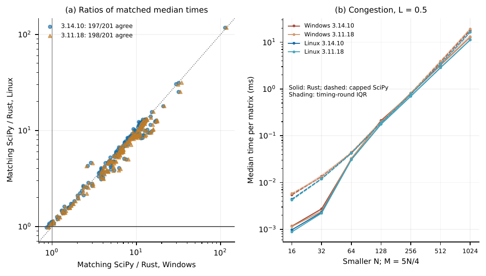
The large square and rectangular cases retain native advantages over SciPy. For required inputs, Linux Rust medians are 250.186 and 250.865 ms in Python 3.14.10 and 3.11.18, versus SciPy’s 1044.099 and 1046.714 ms. At finite limit 0.0004, Rust takes 10.845 and 10.885 ms versus capped SciPy’s 126.932 and 126.454 ms. These examples do not establish an advantage on every structured instance or over every specialized optional-assignment implementation.
Four-worker batching shows a different implementation pattern from the single-call comparisons. Across the three workloads and both Linux environments, C++/Rust median-time ratios range from 1.20 to 1.36; the corresponding current Windows range is 0.92–1.15. Rust and the hybrid implementation use Rayon pools, while C++ uses its own pool, but these measurements do not isolate scheduling, compiler, processor-placement, or operating-system contributions. Figure B2 retains the absolute batch medians and timing-round variability as well as ratios.
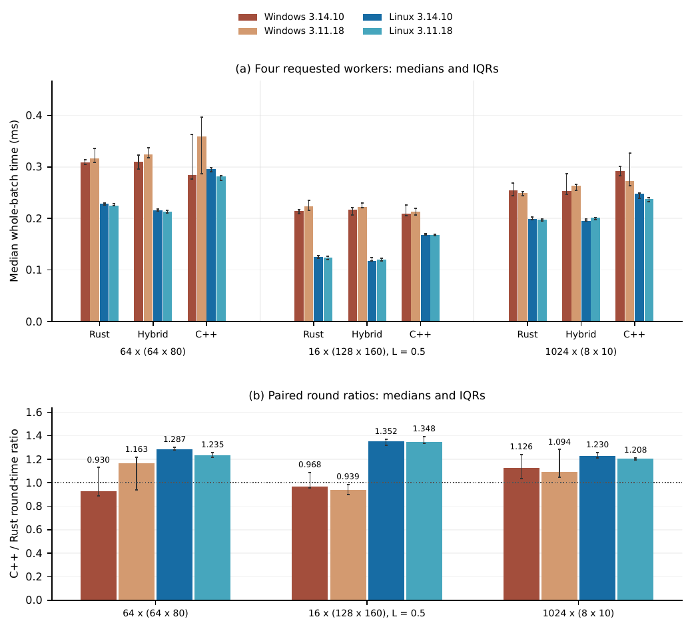
B.6 Memory context
The Linux measurements use getrusage(RUSAGE_SELF).ru_maxrss, returned in KiB and converted to bytes, rather than the Windows peak-working-set counter. Each observation is the nonnegative increase of that process high-water mark after the input is prepared and resident. The two operating-system metrics remain separate. They describe observed resident-memory peaks, not allocations or an exact native-workspace size.
Zero increments occur in 309 of 415 Linux Python 3.14.10 observations and 317 of 415 Linux Python 3.11.18 observations, compared with 41 and 36 in the corresponding current Windows campaigns. Linux process peaks before solving can exceed current RSS by as much as 10.00 and 12.38 MiB, respectively. New resident growth below that earlier peak leaves the high-water counter unchanged. A zero plotted increment therefore does not establish zero allocation, and ratios to zero increments are not meaningful.
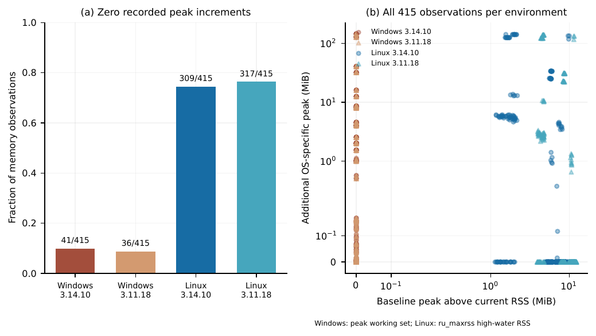
The Linux derivatives use explicit high-water-RSS terminology, while Windows observations retain the peak-working-set label. Formulation buffer sizes are exact calculations independent of these counters: 8 MiB for the real float64 costs, 128 MiB for a 4096-square padded matrix, and 144.5 MiB for the 4352-square rejection expansion.
Appendix C Real-video tracking and common-cost replay
C.1 Clips, detection conditions and preserved sessions
The pyppbox toolbox was introduced in the PoseTReID extension study [27]; this benchmark uses version 4.0.0 [24]. The application study uses frames from the MOT16-04 [21] and MOT20-03 [22] image sequences. The provided frames were packaged into video clips using FFmpeg for ingestion by pyppbox. The evaluated clips each contain 999 decoded frames at 24 fps, with frame sizes 1920 1080 and 1174 880 pixels, respectively. These excerpts do not cover the complete original benchmark sequences; the video encoding rate describes the prepared inputs. Decoded index k maps to converted-GT frame k+1. Input and annotation hashes, frame coverage and alignment checks are retained. The converted five-column annotations do not retain the original class, visibility and ignore-region policy.
Each clip has two detection conditions. GT-derived boxes provide an oracle detection condition through pyppbox’s GTInterpreter with detect_only=True; reference identities are withheld. The real detector condition uses pyppbox V4’s RF-DETR adapter [24, 25], package version 1.10.1, the Nano checkpoint, confidence 0.20, maximum 300 detections and minimum box width 15 pixels. Person class 1 and representative-point calibration 0.25 follow the recorded adapter configuration. The model configuration, optimized inference configuration and warmup input-tensor observations all record 768 768 inference, rather than the checkpoint’s native 384-pixel default. The original cached detection preparation used an NVIDIA GeForce RTX 4090 with PyTorch 2.5.1+cu121; initialization, excluded warmups, synchronized detector timings and checkpoint identity are recorded separately. Detection outputs are cached once and reused across assignment methods. Both conditions use the same fixed geometric ordering and pass boxes, confidence and representative points to trackers without GT identities.
The refreshed CPU campaign ran on 29 October 2026 from 13:44:10 to 14:00:22 UTC. GT and RF configurations were measured together: each of nine rounds shuffles all 72 method/pipeline settings. Predictions and repeated trajectories are checked for determinism. Each pipeline retains its own timing samples and ratios; samples are not pooled across pipelines or with the original 27 October study. Environment records identify the interpreter, packages, source checkout, native binaries, affinity, and thread limits. This single campaign is not independent-day replication and does not fix thermal conditions.
The detector setting was selected in an exploratory pilot using frames 1, 250, 500, 750 and 999 from each clip. The pilot compared resolutions 384, 768 and 1024, confidence thresholds 0.2 and 0.4, and minimum widths 0 and 15 pixels; 768/0.2 gave the largest sampled supplied-box F1 on both clips. The pilot frames overlap the benchmark clips, so the detector assessment is not held out. The pilot records and selection criterion are retained separately from the published solver timings.
C.2 Tracking, assignment interfaces and timing
The refreshed CPU measurements use the Intel Core i9-13900KS host on Windows build 26300, with 16 physical and 24 logical processors reported by the OS. A dedicated environment uses Python 3.11.18, NumPy 2.4.6, SciPy 1.17.1, LAPX 0.13.0, laprust/lapcpp 1.2.0, and the source-pinned pyppbox 4.0.0 checkout. Tracking and replay are sequential on logical CPU 0, with visible library pools limited to one thread. CPU frequency and background activity are not fixed. Frozen GT and detector caches are reused; decoding and detector inference are not rerun.
The stock Centroid tracker uses maximum representative-point spread 64. SORT uses maximum age 1, minimum hits 3 and IoU threshold 0.3 [23, 24]. Centroid retains its gated-distance full assignment and subsequent acceptance test. SORT retains full assignment and IoU post-filtering, including its unique-feasible association bypass. No finite-limit objective is substituted, and dependent video frames are not batched into independent assignments. Table C1 describes actual assignment calls; the input-box totals count observations across frames rather than unique people. Matrix dimensions and square fractions refer specifically to the common SciPy-captured corpus.
| Pipeline | GT boxes | Det. boxes | Det./frame | LAP calls | Rows min–max | Cols min–max | Square % |
|---|---|---|---|---|---|---|---|
| MOT16-04 / GT / Centroid | 51545 | 51545 | 51.60 | 998 | 47–56 | 47–56 | 94.0 |
| MOT16-04 / GT / SORT | 51545 | 51545 | 51.60 | 998 | 47–56 | 47–56 | 91.7 |
| MOT16-04 / RF768 / Centroid | 51545 | 30621 | 30.65 | 998 | 22–39 | 23–39 | 18.6 |
| MOT16-04 / RF768 / SORT | 51545 | 30621 | 30.65 | 976 | 23–39 | 24–42 | 7.2 |
| MOT20-03 / GT / Centroid | 106637 | 106637 | 106.74 | 998 | 84–134 | 84–134 | 74.9 |
| MOT20-03 / GT / SORT | 106637 | 106637 | 106.74 | 998 | 84–134 | 84–134 | 66.1 |
| MOT20-03 / RF768 / Centroid | 106637 | 45990 | 46.04 | 998 | 34–62 | 34–62 | 14.6 |
| MOT20-03 / RF768 / SORT | 106637 | 45990 | 46.04 | 575 | 36–62 | 39–66 | 8.5 |
The nine timed interfaces are LAPX lapjv, lapjvx, lapjvxa, lapjvh, lapjvs and lapjvc, standalone laprust.lapjv and lapcpp.lapjv, and SciPy. LAPX lapjvr is an untimed alias-validation entry for laprust. The application adapter returns the int32 pair arrays expected by pyppbox, with total-cost calculation disabled. Normal contiguous conversion, finite checks, solving, output adaptation and cardinality checks are included. This application interface contract differs from the int64 outputs of the controlled assignment study.
Stock tracking constructs float32 costs. Primary timing sums only sequential tracker.update calls; constructing fresh Person objects, copying emitted results, serialization, evaluation, decoding and detection are excluded. Each method receives 32 excluded warmup frames, then a freshly initialized tracker; SORT’s global ID counter is reset. Nine seeded-shuffled rounds use master seed 20261027. Garbage collection is disabled during measured runs. Each sample is a whole-clip mean update time, and Table C2 reports its nine-round median and [Q1, Q3]. Update FPS is the reciprocal of this mean time, not complete video-pipeline throughput. Separately instrumented passes record solver-call counts and assignment shares, with a separate non-capturing SciPy pass so capture I/O does not inflate those shares. Repeated and instrumented runs retain the same predictions for each configured method.
| Pipeline | scipy | lapjvh | laprust | lapcpp |
|---|---|---|---|---|
| MOT16-04 / GT / Centroid | 0.121 [0.118, 0.124] | 0.106 [0.106, 0.107] | 0.112 [0.110, 0.114] | 0.107 [0.107, 0.108] |
| MOT16-04 / GT / SORT | 1.518 [1.489, 1.524] | 1.490 [1.467, 1.498] | 1.447 [1.440, 1.484] | 1.464 [1.451, 1.503] |
| MOT16-04 / RF768 / Centroid | 0.071 [0.071, 0.076] | 0.067 [0.066, 0.069] | 0.068 [0.066, 0.072] | 0.068 [0.066, 0.070] |
| MOT16-04 / RF768 / SORT | 0.992 [0.986, 1.016] | 0.985 [0.974, 1.021] | 1.009 [0.974, 1.019] | 1.011 [0.968, 1.019] |
| MOT20-03 / GT / Centroid | 0.308 [0.300, 0.325] | 0.269 [0.269, 0.274] | 0.270 [0.268, 0.272] | 0.272 [0.271, 0.274] |
| MOT20-03 / GT / SORT | 3.079 [3.040, 3.127] | 2.977 [2.968, 3.036] | 3.005 [2.990, 3.041] | 2.992 [2.989, 3.039] |
| MOT20-03 / RF768 / Centroid | 0.109 [0.106, 0.114] | 0.101 [0.097, 0.104] | 0.097 [0.096, 0.097] | 0.100 [0.097, 0.103] |
| MOT20-03 / RF768 / SORT | 1.432 [1.405, 1.464] | 1.412 [1.391, 1.471] | 1.410 [1.402, 1.439] | 1.414 [1.403, 1.442] |
C.3 Common-cost replay and objective checks
The refreshed SciPy capture preserves 7,539 matrices across eight pipelines. Every replay method receives the same complete corpus for its pipeline, controlling for changes in live tracker state. Each float32 matrix is separately widened to float64 without recomputing geometry, so both views use the same represented values. Conversion to the replay-corpus dtype occurs before timing; normal adapter work remains included. Input loading, capture, objective checks, warmup, and calibration are excluded. Calibration targets blocks of at least 30 ms, and nine shuffled rounds yield corpus mean times. The 16 pipeline/precision panels contain 1,296 replay samples. Table C3 reports median [Q1, Q3] microseconds per assignment; all nine methods and raw round means remain in the artifact.
| Pipeline / precision | scipy | lapjvh | laprust | lapcpp |
|---|---|---|---|---|
| MOT16-04 / GT / Centroid / float32 | 14.37 [14.22, 15.10] | 5.35 [5.34, 5.70] | 5.41 [5.37, 5.73] | 5.73 [5.62, 6.01] |
| MOT16-04 / GT / Centroid / float64 | 14.26 [13.54, 14.82] | 5.61 [5.56, 6.07] | 5.60 [5.59, 5.74] | 6.15 [5.96, 6.50] |
| MOT16-04 / GT / SORT / float32 | 14.40 [14.34, 14.58] | 5.56 [5.55, 5.85] | 5.76 [5.61, 5.96] | 5.75 [5.70, 5.96] |
| MOT16-04 / GT / SORT / float64 | 13.83 [13.76, 14.10] | 5.76 [5.73, 5.80] | 5.98 [5.77, 6.08] | 6.08 [6.05, 6.10] |
| MOT16-04 / RF768 / Centroid / float32 | 8.68 [8.65, 8.69] | 4.25 [4.24, 4.39] | 4.27 [4.26, 4.30] | 4.33 [4.30, 4.37] |
| MOT16-04 / RF768 / Centroid / float64 | 8.26 [8.22, 8.62] | 4.40 [4.26, 4.46] | 4.30 [4.29, 4.47] | 4.44 [4.29, 4.46] |
| MOT16-04 / RF768 / SORT / float32 | 9.55 [9.45, 10.01] | 4.05 [4.02, 4.17] | 4.10 [4.05, 4.29] | 4.20 [4.18, 4.35] |
| MOT16-04 / RF768 / SORT / float64 | 9.24 [9.07, 9.47] | 4.05 [4.04, 4.26] | 4.05 [4.04, 4.06] | 4.20 [4.13, 4.29] |
| MOT20-03 / GT / Centroid / float32 | 45.87 [45.43, 47.25] | 15.81 [15.64, 16.89] | 15.61 [15.51, 16.05] | 16.93 [16.48, 17.55] |
| MOT20-03 / GT / Centroid / float64 | 45.22 [44.60, 50.03] | 18.25 [16.81, 18.73] | 16.99 [16.68, 17.31] | 18.39 [17.91, 18.91] |
| MOT20-03 / GT / SORT / float32 | 48.55 [46.34, 48.97] | 15.44 [14.98, 15.86] | 14.90 [14.77, 15.61] | 15.84 [15.58, 16.52] |
| MOT20-03 / GT / SORT / float64 | 45.72 [45.27, 47.11] | 16.36 [16.16, 16.93] | 16.69 [16.08, 16.92] | 17.41 [16.90, 18.06] |
| MOT20-03 / RF768 / Centroid / float32 | 15.32 [14.88, 16.23] | 6.37 [6.17, 7.05] | 6.37 [6.23, 7.28] | 6.67 [6.58, 7.36] |
| MOT20-03 / RF768 / Centroid / float64 | 14.02 [13.64, 14.33] | 6.42 [6.33, 6.80] | 6.29 [6.26, 6.86] | 6.53 [6.22, 6.71] |
| MOT20-03 / RF768 / SORT / float32 | 15.02 [14.98, 15.25] | 5.41 [5.40, 5.41] | 5.47 [5.45, 5.54] | 5.70 [5.67, 5.72] |
| MOT20-03 / RF768 / SORT / float64 | 14.57 [14.49, 14.68] | 5.54 [5.53, 5.54] | 5.55 [5.52, 5.57] | 5.59 [5.56, 5.60] |
Saved validation covers 7,539 matrices, two precision views, and ten backend entries: the nine timed methods plus the LAPX lapjvr alias, totaling 150,780 backend/matrix checks. All recorded gaps and alias differences are exactly zero under float64 accumulation on the represented costs. A separate untimed direct-API re-solve independently checks the same coverage, including mapping/cardinality validity, input preservation, float64 sums, and math.fsum totals, with zero observed gaps. The saved-data audit also verifies all 648 primary timing records, 72 prediction/metric records, and summary arithmetic. These are bounded saved-instance checks, not a general numerical proof.
C.4 Supplied-box accuracy and application limits
Accuracy is computed outside timing with motmetrics 1.4.0 [26], using its SciPy assignment backend independently of the tracker backend. Each decoded frame, including empty frames, updates the accumulator. Continuous xyxy IoU at least 0.5 defines eligible object/prediction pairs; predicted identity labels need not equal reference IDs. The evaluation reports IDF1, MOTA, identity switches, false positives and misses against the supplied converted boxes. It does not reconstruct official MOTChallenge class/visibility/ignore filtering. Table C4 therefore reports supplied-box scores, not leaderboard results. Its ranges span all nine backends; rounding can hide tiny MOTA differences, for which exact counts and unrounded scores remain available.
| Pipeline | IDF1 % min–max | MOTA % min–max | IDSW min–max | FP min–max | FN min–max |
|---|---|---|---|---|---|
| MOT16-04 / GT / Centroid | 99.48–100.00 | 100.00–100.00 | 0–1 | 0–0 | 0–0 |
| MOT16-04 / GT / SORT | 99.12–99.12 | 99.78–99.78 | 0–0 | 0–0 | 115–115 |
| MOT16-04 / RF768 / Centroid | 28.07–28.44 | 40.41–40.42 | 1568–1576 | 4108–4109 | 25032–25033 |
| MOT16-04 / RF768 / SORT | 34.99–34.99 | 40.60–40.60 | 535–535 | 2273–2273 | 27811–27811 |
| MOT20-03 / GT / Centroid | 100.00–100.00 | 100.00–100.00 | 0–0 | 0–0 | 0–0 |
| MOT20-03 / GT / SORT | 99.76–99.76 | 99.51–99.51 | 0–0 | 0–0 | 518–518 |
| MOT20-03 / RF768 / Centroid | 28.50–28.90 | 38.13–38.13 | 2990–2993 | 1168–1168 | 61815–61815 |
| MOT20-03 / RF768 / SORT | 36.75–36.75 | 35.58–35.58 | 729–729 | 619–619 | 67348–67348 |
GT detections separate association from detection error; they do not establish real-detector accuracy. Under RF detections, all three proposed native implementations have identical Centroid scores: IDF1 matches SciPy for MOT16-04 and is slightly lower for MOT20-03, while MOTA is slightly lower on both. Inspection of the Centroid tracker shows that identity propagation does not change its current/previous detection geometry: different equal-cost accepted assignments can therefore propagate different identities on the same numerical inputs. SORT has matching saved IDF1/MOTA/switch/FP/FN scores across all nine methods on these clips, even though an equal-cost choice can change a later emitted box. These observations establish neither a general tracking-accuracy gain nor identical hidden tracker states.
Assignment replay gains are larger than tracker-update gains. The stock SORT bypass and motion/bookkeeping work reduce the fraction attributable to assignment, and the relative contribution differs across input conditions. The two clips, two simple trackers, one detector/checkpoint/configuration, and a single CPU measurement session do not define a held-out application population. No detector-plus-tracker throughput, application memory benefit, universal speedup or native finite-limit application advantage is inferred. The frozen collection retains every method/pipeline absolute result, IQR, prediction, metric record, call profile, cost matrix, source snapshot and session identity; the compact tables do not replace those full records.